![IM]()
ROBÓTICA (2135)
Objetivo(s) del curso:
El alumno entenderá las bases teóricas de la robótica, los elementos constituyentes y las propiedades de los robots manipuladores. Será capaz de modelarlos cinemática y dinámicamente al realizar una tarea o seguir una trayectoria.
1. Introducción.
1.1 Antecedentes de la robótica.
ROBÓTICA
La Robótica tiene sus orígenes en la antigüedad a partir de los dispositivos mecánicos simples que buscaban imitar tareas humanas. Esta una disciplina multidisciplinaria que combina la ingeniería mecánica, la electrónica, la informática y la inteligencia artificial con el propósito de diseñar, construir y operar robots que puedan realizar tareas de forma autónoma o semiautónoma.
Desde su conceptualización, la robótica ha sido impulsada por la necesidad de automatizar tareas repetitivas, peligrosas o altamente precisas en distintos sectores industriales, científicos y domésticos.
En sus inicios, la robótica estuvo influenciada por la Automatización Industrial, el desarrollo de sistemas de control y la inteligencia artificial, a lo largo del tiempo de la robótica, la investigación y el desarrollo de nuevas tecnologías han permitido que los robots evolucionen de simples mecanismos programables a sistemas altamente sofisticados con capacidades de aprendizaje y adaptación al entorno.
ORIGEN DE LA ROBÓTICA
La noción de crear artefactos que imiten o asistan el trabajo humano posee raíces culturales profundas, con menciones de autómatas que datan desde la mitología griega. No obstante, el concepto moderno de "robot" y la disciplina de la robótica surgieron formalmente en el siglo XX, impulsados por la necesidad de automatizar tareas industriales y por la influencia de la ciencia ficción.
El concepto de robótica tiene raíces antiguas, pues la humanidad ha intentado desde tiempos remotos crear dispositivos que imiten el comportamiento humano o animal. En la mitología griega, por ejemplo, se mencionan seres mecánicos como Talos, un autómata de bronce que protegía la isla de Creta. También en la cultura china y árabe se documentan mecanismos automáticos, como figuras mecánicas que tocaban instrumentos o escribían.
Durante el Renacimiento, Leonardo da Vinci diseñó uno de los primeros autómatas humanoides, un caballero mecánico capaz de mover los brazos, la cabeza y la mandíbula mediante un sistema de poleas y engranajes. Este diseño, aunque no se construyó en su época, representó un importante avance en la conceptualización de los robots.
El desarrollo real de la robótica comenzó con la Revolución Industrial, cuando la automatización de procesos se convirtió en una prioridad. Con la aparición de máquinas de vapor y sistemas mecánicos de producción, se sentaron las bases para la robótica moderna. Sin embargo, el término "ROBOT" no se acuñó sino hasta 1921, cuando el dramaturgo checo Karel Čapek utilizó la palabra en su obra de teatro R.U.R. (Rossum's Universal Robots).
El término proviene de la palabra checa "robota" y significa Trabajador Forzado; fue utilizada en novela satírica "Rossum's Universal Robots", donde describe al robot como una máquina que sustituye a los seres humanos para ejecutar tareas sin descanso; a pesar de esto, los robots se vuelven contra sus creadores aniquilando a toda la raza humana. Desde aquel entonces, prácticamente a cualquier sistema mecánico con movimiento se le llama robot.
Posteriormente, el escritor Isaac Asimov, en la década de 1940, introdujo el término "robótica" y postuló las famosas Leyes de la Robótica, estableciendo un marco ético para el comportamiento de estas máquinas:
· Ley Cero: Un robot no puede dañar a la humanidad, o a través de su inacción, permitir que se dañe a la humanidad.
· Primera Ley: Un robot no debe dañar a un ser humano ni, por su pasividad, dejar que un ser humano sufra daño.
· Segunda Ley: Un robot debe obedecer las órdenes que le son dadas por un ser humano, excepto cuando estas órdenes están en oposición con la Primera Ley.
· Tercera Ley: Un robot debe proteger su propia existencia, siempre y cuando esta protección no esté en conflicto con la Primera y la Segunda Ley.
La naturaleza multidisciplinaria de la robótica permite involucrar una gran cantidad de áreas del conocimiento tales como matemáticas, física, electrónica, computación, visión e inteligencia artificial, entre otras. Por otro lado, aun cuando la robótica es un área eminentemente experimental, todos sus resultados están sustentados con un estricto rigor científico.
El desarrollo tecnológico que condujo al robot moderno fue la convergencia de dos áreas principales: los teleoperadores y el control numérico (NC).
Los teleoperadores, desarrollados inicialmente después de la Segunda Guerra Mundial, eran manipuladores mecánicos controlados remotamente (mecanismos maestro-esclavo) utilizados para la manipulación de materiales peligrosos, como los radioactivos.
Paralelamente, el desarrollo de máquinas-herramienta NC sentó las bases para el control automatizado y la programación. George C. Devol es reconocido por patentar el primer diseño de robot industrial en 1954, denominado "dispositivo de transferencia de artículos programados", combinando la articulación de un teleoperador con la capacidad de programación de un controlador NC.
Joseph F. Engelberger, junto con Devol, fundó Unimation, instalando el primer robot industrial, el Unimate, en una planta de General Motors en 1961.
La característica clave de esta innovación fue la programabilidad y multifuncionalidad del dispositivo, permitiéndole realizar diversas tareas con un costo de reprogramación relativamente bajo.
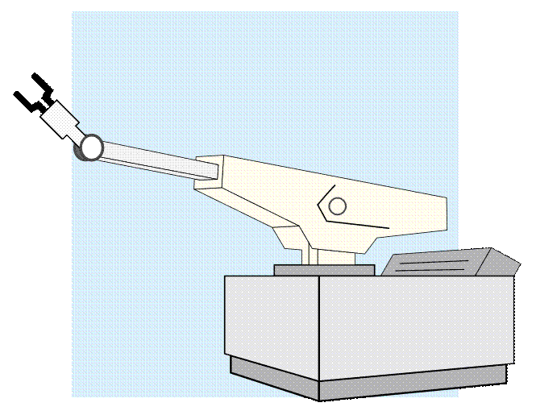
Existen varias definiciones para describir a un robot, entre ellas la que proporciona una mejor descripción es la adoptada por el Robot Institute of America (RIA) la cual establece que:
Un robot es un manipulador multifuncional reprogramable diseñado para mover materiales, partes, herramientas o dispositivos especializados a través de movimientos programados para la ejecución de una variedad de tareas.
MECATRÓNICA
La robótica estudia y analiza una clase particular de sistemas mecánicos llamados robots manipuladores, y la característica básica que distingue a un robot manipulador de un sistema mecatrónico genérico es la multifuncionalidad.
Mientras un sistema mecatrónico realiza solo una función, como en los casos de una lavadora, una cafetera, una cortadora de papel, etc. Es decir, la estructura mecánica de un sistema mecatrónico no está diseñada para realizar múltiples funciones.
En contraste, en el caso de un robot manipulador su estructura mecánica le permite realizar una amplia variedad de aplicaciones, cambiando únicamente la herramienta, que depende de la aplicación, y por supuesto llevando a cabo la reprogramación correspondiente.
La mecatrónica es un concepto de la industria japonesa de 1969, y proviene de dos palabras del idioma inglés: mecha, que se refiere a un sistema mecánico, y tronics que denota la parte electrónica, es decir, la mecatrónica integra la mecánica con la electrónica para realizar una tarea específica.
En este contexto un robot manipulador es parte de la mecatrónica. Sin embargo, un sistema mecatrónico no necesariamente pertenece a la clase particular de sistemas mecánicos denominados robots manipuladores.
1.2 Estado del arte de la robótica.
ESTADO DEL ARTE DE LA ROBÓTICA
El estado del arte de la robótica se refiere al conjunto de avances tecnológicos, metodológicos y científicos que han permitido el desarrollo y la implementación de sistemas robóticos en diversas aplicaciones. Este concepto no solo abarca las capacidades actuales de los robots, sino también las tendencias y direcciones futuras en áreas como la inteligencia artificial, la robótica móvil, la robótica colaborativa y los sistemas de percepción avanzada.
EVOLUCIÓN TECNOLÓGICA Y TENDENCIAS ACTUALES
El desarrollo de la robótica ha experimentado un crecimiento exponencial en los últimos años gracias a los avances en sensores, materiales inteligentes, procesamiento de datos y modelos de inteligencia artificial. En particular, la convergencia entre la robótica y el aprendizaje automático ha permitido que los robots sean cada vez más autónomos, adaptativos y eficientes. Algunas de las tendencias más importantes en el estado del arte de la robótica incluyen:
· Robótica colaborativa (cobots): Los robots están siendo diseñados para interactuar de manera segura con humanos en entornos de trabajo compartidos, optimizando la producción industrial y mejorando la seguridad laboral.
· Automatización inteligente: Los robots modernos utilizan algoritmos de aprendizaje profundo para realizar tareas complejas con precisión y adaptabilidad.
· Interfaz cerebro-máquina: Se están desarrollando sistemas que permiten la interacción directa entre el cerebro humano y los robots, facilitando aplicaciones en neurorehabilitación y asistencia médica.
· Microrrobótica y nanotecnología: Robots en escalas microscópicas están revolucionando la medicina, permitiendo intervenciones mínimamente invasivas en el cuerpo humano.
INTELIGENCIA ARTIFICIAL Y ROBÓTICA
Uno de los avances más significativos en el estado del arte de la robótica es la integración de la inteligencia artificial (IA) en los sistemas robóticos. Gracias a los modelos de aprendizaje automático y redes neuronales profundas, los robots pueden mejorar su desempeño a lo largo del tiempo sin intervención humana. Las aplicaciones más destacadas de la IA en la robótica incluyen:
· Visión artificial y reconocimiento de patrones: Los robots pueden analizar imágenes en tiempo real y tomar decisiones basadas en datos visuales.
· Aprendizaje por refuerzo: Se ha implementado en robots autónomos para mejorar su capacidad de navegación y manipulación de objetos.
· Procesamiento del lenguaje natural: Permite la interacción entre humanos y robots de manera más natural y efectiva.
APLICACIONES AVANZADAS DE LA ROBÓTICA
El estado del arte de la robótica abarca múltiples sectores, cada uno con aplicaciones innovadoras que están transformando sus respectivos campos.
· Industria 4.0: En la manufactura, los robots se utilizan para mejorar la eficiencia, reducir costos y garantizar precisión en la producción. Empresas como Tesla y Amazon han implementado flotas de robots en sus líneas de ensamblaje y almacenes.
· Medicina y salud: Robots quirúrgicos como el sistema Da Vinci permiten realizar intervenciones médicas con una precisión sin precedentes. También se han desarrollado robots de asistencia para el cuidado de personas mayores y discapacitadas.
· Exploración espacial: La NASA ha desplegado robots como el Perseverance en Marte, dotados de sistemas autónomos para la exploración del planeta rojo.
· Defensa y seguridad: Los drones y robots autónomos han sido adoptados en aplicaciones militares y de rescate, optimizando operaciones en terrenos hostiles.
· Agricultura automatizada: Los robots agrícolas están revolucionando la cosecha y el mantenimiento de cultivos mediante el uso de sensores avanzados y análisis de datos en tiempo real.
DESAFÍOS Y FUTURO DE LA ROBÓTICA
A pesar de los avances en el estado del arte, la robótica aún enfrenta múltiples desafíos que deben superarse para lograr una integración completa en la sociedad. Algunos de los principales retos incluyen:
· Ética y regulación: El uso de robots en el ámbito laboral plantea cuestiones éticas sobre el reemplazo de empleos humanos y la responsabilidad legal en caso de fallas o accidentes.
· Eficiencia energética: Se requiere el desarrollo de baterías más eficientes y tecnologías de bajo consumo para extender la autonomía de los robots.
· Seguridad cibernética: La protección contra ataques informáticos es esencial para evitar la manipulación indebida de sistemas robóticos.
· Interacción humano-robot: Se debe mejorar la comunicación y la capacidad de los robots para comprender e interpretar las emociones y necesidades humanas.
1.3 Tipos de robots y clasificación de robots manipuladores.
TIPOS DE ROBOTS
La robótica ha evolucionado significativamente, diversificándose en múltiples tipos de robots que se clasifican según su estructura, funcionalidad y entorno de operación. Los tipos de robots más comunes incluyen:
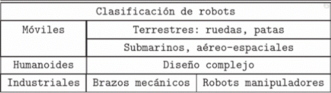
Robots Industriales
Los robots industriales están diseñados para automatizar tareas repetitivas en procesos de manufactura, ensamblaje y manipulación de materiales. Se caracterizan por su alta precisión, velocidad y capacidad de operar en ambientes hostiles o peligrosos para los humanos.
· Robots cartesianos: Tienen movimientos lineales en los tres ejes (X, Y, Z), lo que los hace ideales para tareas de ensamblaje y manipulación de materiales.
· Robots cilíndricos: Combinan movimientos lineales y rotacionales, utilizados comúnmente en aplicaciones de soldadura y montaje.
· Robots SCARA (Selective Compliance Articulated Robot Arm): Poseen alta velocidad y precisión en movimientos horizontales, ideales para tareas de ensamblaje electrónico.
· Robots articulados: Tienen múltiples grados de libertad, lo que les permite realizar movimientos complejos y precisos. Son ampliamente usados en la industria automotriz.
· Robots delta: Estructura en forma de araña que ofrece alta velocidad y precisión, comúnmente usados en empaquetado y selección de productos.
|
Configuración |
Nomenclatura |
Articulaciones (Ejes) |
Espacio de Trabajo (Volumen de Trabajo) |
Ventajas Destacadas |
|
Cartesiano |
PPP |
3 Prismáticas |
Prisma rectangular (Caja) |
Estructura muy rígida, cinemática inversa trivial. |
|
Cilíndrico |
RPP |
1 Revoluta, 2 Prismáticas |
Porción de un cilindro |
Útil para cavidades horizontales y soldadura de tubos. |
|
Esférico/Polar |
RRP |
2 Revolutas, 1 Prismática |
Porción de una esfera hueca |
Empleado en mecanizado y manipulación en el suelo. |
|
Articulado/ Antropomórfico |
RRR |
3 Revolutas |
Porción de una esfera (el más grande) |
Mayor destreza y capacidad para alcanzar espacios confinados. |
|
SCARA |
RRP |
2 Revolutas paralelas, 1 Prismática |
Forma cilíndrica específica |
Alta velocidad, alta rigidez vertical, ideal para ensamble. |
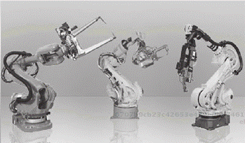
Robots Móviles
Estos robots se desplazan de un lugar a otro, ya sea en entornos estructurados o no estructurados. Se utilizan en aplicaciones de logística, exploración y servicios.
· Robots autónomos: Capaces de navegar y tomar decisiones sin intervención humana, como los vehículos autónomos y los drones.
· Robots guiados: Dependen de un sistema externo para su navegación, como las cintas transportadoras automatizadas.
· Robots subacuáticos: Diseñados para exploración y tareas en entornos marinos.
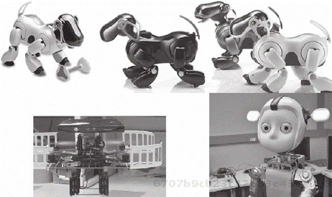
Robots Humanoides
Imitan la forma y movimientos del cuerpo humano. Se utilizan en investigación, entretenimiento y como asistentes en entornos sociales.
· Robots bípedos: Capaces de caminar y mantener el equilibrio, como ASIMO de Honda.
· Robots sociales: Interactúan con las personas utilizando procesamiento de lenguaje natural y reconocimiento facial, como Sophia de Hanson Robotics.
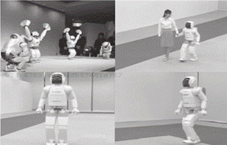
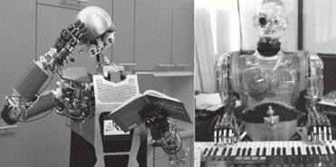
Robots de Servicio
Estos robots están diseñados para asistir a los humanos en tareas cotidianas, ya sea en el hogar, hospitales o espacios públicos.
· Robots domésticos: Como las aspiradoras automáticas y asistentes personales.
· Robots médicos: Utilizados en cirugías de alta precisión o en rehabilitación de pacientes.
· Robots de asistencia personal: Ayudan a personas con discapacidades en su vida diaria.
CLASIFICACIÓN DE ROBOTS MANIPULADORES
Los robots manipuladores son un tipo específico de robot industrial diseñado para mover, posicionar y manipular objetos en el espacio.
Su clasificación se basa en criterios como la estructura mecánica, los grados de libertad, el tipo de control y la aplicación.
Clasificación según la Configuración Mecánica
· Manipuladores de coordenadas cartesianas: Estos robots tienen tres ejes lineales que se mueven de manera ortogonal entre sí. Su estructura rígida les proporciona alta precisión en tareas repetitivas como corte, soldadura y ensamblaje.
· Manipuladores cilíndricos: Combinan un eje rotacional con dos ejes lineales, lo que les permite trabajar en espacios verticales y horizontales. Son comunes en procesos de montaje y manipulación de materiales.
· Manipuladores esféricos: Tienen un brazo que puede moverse en coordenadas polares, lo que les otorga un amplio rango de movimiento en un espacio esférico. Se utilizan en tareas de pintura y soldadura.
· Manipuladores articulados: Se componen de varios eslabones conectados por juntas rotacionales, proporcionando una gran flexibilidad y alcance. Son los más comunes en la industria automotriz debido a su capacidad para realizar tareas complejas.
Clasificación según el Grado de Libertad
El grado de libertad (DoF, por sus siglas en inglés) se refiere al número de movimientos independientes que puede realizar el manipulador.
· Manipuladores de 3 DoF: Limitados a movimientos básicos en el espacio tridimensional.
· Manipuladores de 4 a 6 DoF: Permiten mayor flexibilidad y capacidad para orientarse en múltiples direcciones, ideales para aplicaciones de ensamblaje y soldadura.
· Manipuladores de más de 6 DoF: Utilizados en tareas complejas que requieren movimientos altamente precisos y adaptativos, como la cirugía robótica.
Clasificación según el Tipo de Control
· Robots manipuladores programables: Se programan para realizar tareas específicas y repetitivas. Son ideales para procesos de producción en masa.
· Robots manipuladores adaptativos: Utilizan sensores y algoritmos de inteligencia artificial para adaptarse a entornos dinámicos y cambiar su comportamiento en tiempo real.
· Robots manipuladores teleoperados: Controlados a distancia por un operador humano, comunes en aplicaciones de exploración espacial y desactivación de explosivos.
Clasificación según la Aplicación
· Manipuladores industriales: Utilizados en líneas de ensamblaje, soldadura, pintura y manipulación de materiales pesados.
· Manipuladores médicos: Como el robot quirúrgico Da Vinci, que permite realizar procedimientos mínimamente invasivos con alta precisión.
· Manipuladores de investigación: Diseñados para experimentar con nuevas tecnologías de control y automatización.
CARACTERÍSTICAS Y DIFERENCIAS ENTRE ROBOTS MANIPULADORES Y OTROS TIPOS DE ROBOTS
Los robots manipuladores se diferencian de otros tipos de robots por su capacidad para interactuar físicamente con objetos y realizar tareas específicas de manipulación. Algunas de sus características distintivas incluyen:
· Precisión y repetibilidad: Son capaces de realizar tareas con un alto grado de exactitud y de repetirlas múltiples veces sin pérdida de precisión.
· Capacidad de carga: Pueden levantar y manipular objetos de diferentes pesos y tamaños, dependiendo de su diseño.
· Flexibilidad: Algunos modelos avanzados tienen la capacidad de adaptarse a diferentes tareas mediante la programación o el uso de herramientas intercambiables.
· Uso de sensores: Incorporan sensores para mejorar la precisión y la seguridad en la manipulación de objetos.
En contraste, los robots móviles están diseñados principalmente para desplazarse en entornos dinámicos, mientras que los robots humanoides buscan imitar las capacidades motoras y sociales del ser humano.
REDUNDANCIA CINEMÁTICA
Un manipulador es redundante cuando posee más GdL que el mínimo necesario para posicionar y orientar su efector final (, donde es la dimensión del espacio operacional).
La redundancia proporciona mayor destreza, versatilidad y la capacidad de evitar obstáculos o singularidades.
El robot hiper-redundante es aquel con un número de GdL muy superior al mínimo requerido.
Una forma de clasificar un robot como hiper-redundante es cuando el número de GdL es al menos el doble del mínimo necesario para posicionar y orientar su extremo:
donde es el número mínimo de GdL (6 en el espacio tridimensional).
Un robot hiper-redundante, según esta definición, sería más tolerante a fallos y capaz de "envolver" objetos con su cuerpo manteniendo la capacidad de manipularlos.
APLICACIONES AVANZADAS DE LOS ROBOTS MANIPULADORES
Industria Automotriz
En la industria automotriz, los robots manipuladores se utilizan en la soldadura de carrocerías, la aplicación de pintura y el ensamblaje de componentes.
Su precisión y velocidad permiten aumentar la eficiencia y reducir los errores humanos.
Industria Electrónica
Los robots SCARA y delta son ampliamente utilizados en la industria electrónica para la colocación precisa de componentes en placas de circuito impreso. Su capacidad para trabajar con piezas pequeñas y frágiles es esencial en este sector.
Medicina y Cirugía
El sistema quirúrgico Da Vinci es un ejemplo de cómo los robots manipuladores han revolucionado la medicina. Este robot permite realizar cirugías mínimamente invasivas con una precisión que supera la capacidad humana, reduciendo los tiempos de recuperación y mejorando los resultados clínicos.
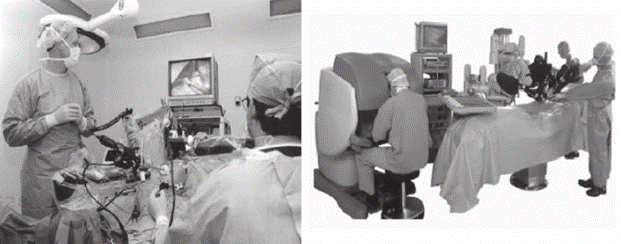
Exploración Espacial
La NASA y otras agencias espaciales utilizan robots manipuladores en la exploración de otros planetas y en la reparación de satélites en órbita. Estos robots deben ser altamente adaptativos y capaces de operar en condiciones extremas.
1.4 Componentes de robots manipuladores.
SISTEMA DE ELECTRÓNICA Y SENSORES
El sistema de electrónica y sensores es fundamental para el funcionamiento de un robot manipulador, ya que integra los componentes que permiten la percepción del entorno, el procesamiento de la información y la ejecución de acciones precisas. Este sistema se compone de varios elementos clave que interactúan entre sí para garantizar la correcta operación del robot.
Computadora Principal
La computadora principal de un robot manipulador es el cerebro que coordina todas las funciones del sistema robótico. Esta unidad central de procesamiento se encarga de recibir datos de los sensores, ejecutar algoritmos de control y enviar comandos a los actuadores. Las computadoras modernas para robots suelen tener capacidades de procesamiento en tiempo real para gestionar las complejas dinámicas de los manipuladores, asegurando que las decisiones se tomen de manera precisa y eficiente.
El software que se ejecuta en la computadora principal incluye desde sistemas operativos especializados en tiempo real hasta entornos de desarrollo que permiten la programación de trayectorias y la implementación de estrategias de control avanzadas, como el control predictivo o el aprendizaje automático.
Además, la computadora principal puede estar conectada en red con otros dispositivos o sistemas para facilitar la comunicación y el control distribuido, especialmente en entornos industriales complejos.
Tarjeta de Control o Desarrollo
Las tarjetas de control o desarrollo son interfaces intermedias que conectan la computadora principal con los actuadores y sensores del robot. Estas tarjetas permiten la conversión de señales digitales a analógicas y viceversa, gestionando la comunicación entre el software de control y el hardware del robot. Algunas tarjetas incluyen microcontroladores que pueden ejecutar tareas específicas de control de manera autónoma, aliviando la carga de la computadora principal.
Existen distintos tipos de tarjetas de control, que varían en función de la complejidad del sistema robótico. Por ejemplo, las tarjetas basadas en microcontroladores son ideales para tareas simples de control, mientras que las basadas en FPGA (Field-Programmable Gate Array) ofrecen una mayor flexibilidad y capacidad de procesamiento en aplicaciones que requieren respuestas rápidas y precisas. Estas tarjetas también incluyen interfaces de comunicación como UART, SPI o I2C, que facilitan la integración con otros dispositivos electrónicos.
Etapa de Potencia
La etapa de potencia se encarga de amplificar las señales de control para que puedan accionar los motores y actuadores del robot. Este componente es crucial, ya que transforma las señales de bajo voltaje de la tarjeta de control en corrientes más altas necesarias para el movimiento físico. Las tecnologías empleadas en esta etapa incluyen transistores de efecto de campo y módulos IGBT, que permiten una gestión eficiente de la energía y la protección contra sobrecargas.
Sensores
Los sensores en robótica proporcionan la información necesaria para que el sistema pueda interactuar de forma efectiva con su entorno. Existen diversos tipos de sensores: de posición, velocidad, aceleración, fuerza y visión, entre otros. Estos dispositivos permiten al robot detectar y adaptarse a cambios en su entorno, garantizando la precisión y seguridad en sus operaciones. Los sensores son esenciales para la implementación de estrategias de control en lazo cerrado, que mejoran la exactitud y la estabilidad del robot.
· Sensores de posición: Detectan la ubicación exacta de las partes móviles del robot. Entre ellos destacan los encoders y potenciómetros, que permiten conocer la orientación y el ángulo de las articulaciones.
· Sensores de velocidad y aceleración: Miden la rapidez con la que se mueven los componentes del robot y cómo varía dicha velocidad. Los acelerómetros y giroscopios son ejemplos comunes.
· Sensores de fuerza y par: Ayudan a controlar la cantidad de fuerza que el robot aplica al manipular objetos, asegurando que no se dañen durante el proceso.
· Sensores de proximidad y visión: Incluyen cámaras, sensores ultrasónicos e infrarrojos que permiten al robot detectar objetos en su entorno y ajustar su comportamiento en consecuencia.
Conexiones
Las conexiones en un sistema robótico abarcan tanto las conexiones eléctricas como las de comunicación. Estas incluyen cables, buses de datos y protocolos de comunicación que aseguran la transmisión eficiente de información entre los diferentes componentes del robot. La correcta gestión de las conexiones es fundamental para evitar interferencias y garantizar la fiabilidad del sistema.
En cuanto a las conexiones de comunicación, se emplean distintos protocolos que aseguran la transferencia de datos de manera eficiente y confiable.
Algunos de los más utilizados en robótica incluyen:
· I2C (Inter-Integrated Circuit): Ideal para conectar múltiples sensores a una misma línea de comunicación, utilizando solo dos cables.
· SPI (Serial Peripheral Interface): Proporciona una mayor velocidad de transmisión, siendo adecuado para aplicaciones que requieren tiempos de respuesta rápidos.
· CAN (Controller Area Network): Ampliamente usado en aplicaciones industriales y automotrices, permite la comunicación robusta entre múltiples dispositivos en entornos con alta interferencia electromagnética.
SISTEMA DE CONTROL
Procesadores y algoritmos que determinan el comportamiento. El sistema de control de un robot manipulador se basa en procesadores que ejecutan algoritmos diseñados para determinar el comportamiento del robot. Estos algoritmos incluyen controladores PID, lógica difusa, redes neuronales y técnicas de control adaptativo. La elección del algoritmo adecuado depende de la complejidad de la tarea y del entorno en el que opera el robot. Los procesadores modernos permiten la ejecución de múltiples algoritmos en paralelo, optimizando el rendimiento del sistema.
SISTEMA DE POTENCIA O MOTOR
Fuente de energía eléctrica, neumática o hidráulica. El sistema de potencia de un robot manipulador puede utilizar diferentes fuentes de energía, dependiendo de la aplicación y los requisitos específicos del robot.
Las fuentes eléctricas son las más comunes, proporcionando energía a motores eléctricos que accionan los actuadores.
En aplicaciones que requieren alta fuerza o precisión, se pueden emplear sistemas neumáticos o hidráulicos.
Cada tipo de fuente de energía tiene sus ventajas y desventajas en términos de eficiencia, control y mantenimiento.
SISTEMA MECÁNICO O ESTRUCTURA
Estructuras y actuadores que permiten el movimiento. La estructura mecánica de un robot manipulador incluye los brazos, juntas y enlaces que forman la configuración física del robot.
Los actuadores, que pueden ser motores eléctricos, servomotores o cilindros hidráulicos/neumáticos, son los componentes que generan el movimiento en la estructura.
El diseño de la estructura y la selección de los actuadores son factores críticos que afectan la precisión, velocidad y capacidad de carga del robot.
Además, la integración de materiales ligeros y resistentes mejora la eficiencia energética y la durabilidad del sistema.
1.5 Aplicaciones de los robots manipuladores.
INDUSTRIA MANUFACTURERA
En la industria manufacturera, los robots manipuladores desempeñan un papel crucial en la automatización de procesos, mejorando la eficiencia, la calidad del producto y la seguridad en el lugar de trabajo.
· Ensamblaje: Los robots ensambladores son capaces de realizar tareas complejas con una precisión milimétrica, lo que reduce significativamente los errores humanos. Estos robots pueden ensamblar componentes electrónicos, piezas automotrices y productos de consumo masivo, aumentando la velocidad de producción sin comprometer la calidad.
· Soldadura: La soldadura robótica es una de las aplicaciones más comunes en la industria automotriz y metalúrgica. Los robots de soldadura aseguran una unión uniforme y resistente entre las piezas metálicas, minimizando defectos y aumentando la durabilidad de los productos. Además, estos robots pueden trabajar en ambientes peligrosos para los humanos, como en presencia de gases tóxicos o altas temperaturas.
· Pintura: Los robots pintores garantizan una cobertura uniforme y precisa, eliminando la variabilidad inherente al trabajo manual. Además, reducen el desperdicio de material y la exposición de los trabajadores a productos químicos peligrosos. Esta tecnología es especialmente útil en la industria automotriz y de bienes de consumo.
· Empaquetado: En el empaquetado, los robots manipuladores agilizan el proceso de clasificación, embalaje y paletización de productos. Estos sistemas permiten manejar grandes volúmenes de productos con rapidez y exactitud, optimizando la logística y reduciendo costos operativos.
MEDICINA
La medicina ha experimentado avances significativos con la incorporación de robots manipuladores, mejorando tanto la precisión de los procedimientos como la calidad de vida de los pacientes.
· Cirugías asistidas: Los robots quirúrgicos, como el famoso sistema Da Vinci, permiten a los cirujanos realizar intervenciones mínimamente invasivas con una precisión sin precedentes. Estos robots ofrecen una visualización mejorada y una destreza superior a la mano humana, lo que resulta en menos complicaciones, cicatrices más pequeñas y tiempos de recuperación más rápidos.
· Prótesis robóticas: Las prótesis avanzadas utilizan tecnología robótica para imitar el movimiento natural de las extremidades. Estas prótesis, controladas mediante señales neuromusculares o interfaces cerebro-computadora, permiten a los usuarios recuperar funciones motoras complejas, mejorando su independencia y calidad de vida.
· Rehabilitación: Los exoesqueletos y dispositivos robóticos de rehabilitación ayudan a los pacientes a recuperar la movilidad después de accidentes cerebrovasculares, lesiones medulares o cirugías ortopédicas. Estos robots proporcionan terapia física intensiva y personalizada, adaptándose al progreso del paciente y facilitando la recuperación funcional.
EXPLORACIÓN
La exploración de entornos extremos es una de las áreas donde los robots manipuladores demuestran su valor, permitiendo a los humanos acceder a lugares inaccesibles o peligrosos.
· Aplicaciones espaciales: En el espacio, los robots manipuladores son esenciales para la construcción y mantenimiento de estaciones espaciales, la manipulación de satélites y la exploración de otros planetas. Ejemplos notables incluyen el brazo robótico Canadarm en la Estación Espacial Internacional y los rovers enviados a Marte, como Curiosity y Perseverance, que realizan tareas científicas y de recolección de muestras en condiciones extremas.
· Aplicaciones submarinas: Los robots submarinos, conocidos como ROVs (vehículos operados remotamente), permiten la exploración y el mantenimiento de infraestructuras en el fondo marino, como oleoductos, cables de telecomunicaciones y plataformas petrolíferas. Estos robots pueden operar a profundidades donde la presión y la oscuridad hacen imposible la intervención humana directa.
· Ambientes extremos: Los robots manipuladores también se utilizan en la exploración de volcanes, minas profundas y zonas afectadas por desastres nucleares o químicos. Equipados con sensores especializados, estos robots recopilan datos valiosos mientras mantienen a los operadores humanos a salvo de condiciones peligrosas.
SERVICIOS
En el sector de servicios, los robots manipuladores están revolucionando la forma en que interactuamos con la tecnología en nuestra vida diaria y en entornos laborales.
· Robots colaborativos (cobots): Los cobots están diseñados para trabajar junto a los humanos en entornos compartidos, asistiendo en tareas que requieren precisión, repetitividad o fuerza. Estos robots se utilizan en fábricas, laboratorios y oficinas, mejorando la productividad sin reemplazar completamente la mano de obra humana. Su capacidad para aprender de la interacción y adaptarse a nuevas tareas los hace especialmente versátiles.
· Robots de asistencia: En el ámbito doméstico y de cuidado personal, los robots de asistencia ayudan a personas mayores o con discapacidades a realizar tareas cotidianas, como cocinar, limpiar o moverse dentro del hogar. Estos robots también incluyen asistentes personales inteligentes que pueden gestionar agendas, controlar dispositivos del hogar y proporcionar compañía.
· Atención al cliente y hospitalidad: Los robots manipuladores también se están introduciendo en la atención al cliente, actuando como recepcionistas, guías en museos o asistentes en hoteles. Su capacidad para interactuar de manera natural con las personas mejora la experiencia del usuario y optimiza la eficiencia en el servicio.
2. Descripción espacial de cuerpos rígidos.
2.1 Sistemas de referencia.
SISTEMAS DE REFERENCIA
Los sistemas de referencia permiten definir la posición y orientación de un cuerpo rígido en el espacio tridimensional. Se utilizan coordenadas cartesianas, cilíndricas o esféricas para establecer referencias tanto locales como globales.
Algebra Lineal
En álgebra lineal, un sistema de referencia está formado por un punto y una base. Consideraremos una base como el contexto desde el que podremos referenciar las propiedades de los cuerpos que estudiemos.
_archivos/image013.gif)
Los sistemas de referencia pueden estar posicionados en cualquier punto del espacio
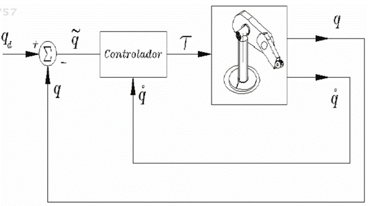
SISTEMAS DE COORDENADAS GLOBALES O ABSOLUTOS
El sistema de coordenadas global, también conocido como absoluto, se considera generalmente fijo en relación con la Tierra o cualquier otro plano inmóvil, como el chasis de un automóvil.
Este sistema es utilizado para describir el movimiento absoluto de los cuerpos en el espacio. Por ejemplo, si se analiza el movimiento de la pluma de un limpiaparabrisas, se puede utilizar un sistema de coordenadas unido al vehículo como referencia absoluta, ignorando el movimiento del automóvil en sí.
SISTEMAS DE COORDENADAS LOCALES
Los sistemas locales se definen en relación con partes específicas de un mecanismo, como un eslabón o una junta.
Estos sistemas permiten describir movimientos relativos dentro del mecanismo. Los sistemas locales pueden ser rotatorios o no rotatorios.
· Rotatorios: Se mueven y giran junto con el eslabón al que están asociados.
·
No rotatorios: Permanecen paralelos al sistema global,
pero se trasladan junto con el eslabón.
Esta diferenciación permite medir ángulos y posiciones de manera precisa
dependiendo de la necesidad del análisis.
Importancia del marco de referencia inercial
Un marco de referencia inercial es aquel que no experimenta aceleración. Es crucial para el análisis cinemático porque simplifica la descripción de los movimientos, ya que las leyes de la física, como la primera ley de Newton, se aplican directamente sin necesidad de considerar fuerzas ficticias.
2.2 Descripción de la posición.
POSICIÓN
La posición de un cuerpo se determina mediante un vector de posición, definido desde el origen del sistema de referencia hasta un punto específico del cuerpo rígido. Este vector se expresa con sus componentes en las coordenadas seleccionadas.
Un sistema de referencia nos permite referenciar la posición y la orientación de un cuerpo. La posición se referencia con un vector de posición p
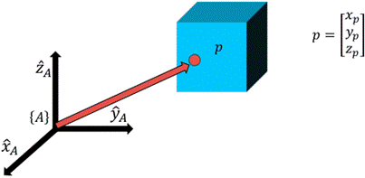
Sistema cartesiano
En este sistema, la posición se describe mediante las componentes en los ejes X, Y (y Z en tres dimensiones). Por ejemplo, un punto A en el plano puede tener coordenadas (X, Y), que representan sus distancias respecto a los ejes X e Y del sistema global.
Sistema polar
Aquí, la posición se expresa mediante una magnitud (la distancia desde el origen) y un ángulo que indica la dirección del punto respecto al eje X positivo. La conversión entre coordenadas polares y cartesianas se realiza utilizando el teorema de Pitágoras y funciones trigonométricas.
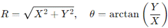
Estas fórmulas permiten describir cualquier punto en el espacio a partir de su distancia al origen y su ángulo de orientación.
TRANSFORMACIÓN DE COORDENADAS
En muchos casos, es necesario transformar las coordenadas de un punto de un sistema de referencia local a uno global (o viceversa). Si los orígenes coinciden, la transformación puede implicar solo una rotación. Por ejemplo, si el punto A tiene coordenadas (Rx, Ry) en el sistema local y queremos obtener sus coordenadas (RX, RY) en el sistema global, se pueden utilizar las siguientes ecuaciones:
donde δ es el ángulo entre los dos sistemas de coordenadas.
DESPLAZAMIENTO
El desplazamiento se define como el cambio en la posición de un punto, y se representa como la distancia en línea recta entre su posición inicial y final. Es importante notar que el desplazamiento no siempre coincide con la longitud total de la trayectoria recorrida, ya que este último puede incluir curvas y desvíos, mientras que el desplazamiento es una medida directa de punto a punto.
2.3 Descripción de la orientación.
ORIENTACIÓN
La orientación de un cuerpo rígido se describe a través de ángulos de rotación o matrices de rotación. Los ángulos de Euler y las representaciones basadas en cuaterniones son comunes para simplificar la descripción en aplicaciones tridimensionales.
Es común que sea necesario definir la orientación de un cuerpo. Para esto, es necesario asociar un sistema de referencia al punto que se desea describir.
Matriz de rotación
La rotación se puede describir como una matriz que contiene los tres vectores unitarios que componen la base del elemento descrito, en términos del sistema coordenado de referencia. Esta matriz nos dice cómo está rotado el sistema B respecto al sistema A.
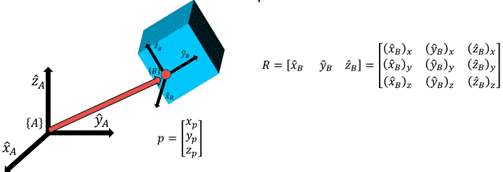
Las componentes en 𝑥, y, z de cada vector unitario del sistema de interés se pueden ver como proyecciones de cada vector unitario sobre los vectores unitarios de la base de referencia.
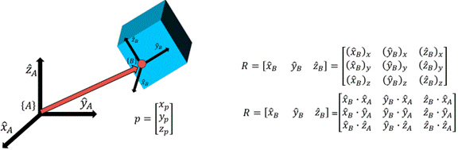
Si transponemos esta matriz, se puede observar:
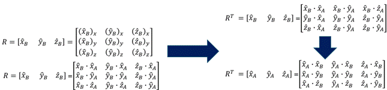
Por lo tanto, la transpuesta de la matriz de rotación que representaba la rotación del sistema B visto desde el sistema 𝐴, es ahora la rotación del sistema 𝐴 visto desde el sistema B :
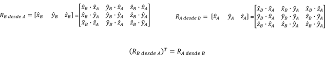
Dado que para nuestros análisis las matrices de rotación están compuestas de una base ortonormal, su inversa es igual a su transpuesta
Para describir de forma total la posición de un punto en el espacio se necesita la información de la posición y la rotación. Ambos datos se pueden unir en un elemento llamado frame, que consiste en cuatro vectores que dan información de posición y orientación.
REPRESENTACIÓN DE LA ORIENTACIÓN
Para expresar la orientación de un elemento, se toman en cuenta las proyecciones de una base sobre la otra.
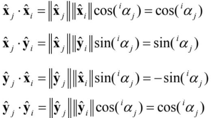
_archivos/image028.gif)
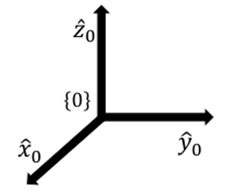
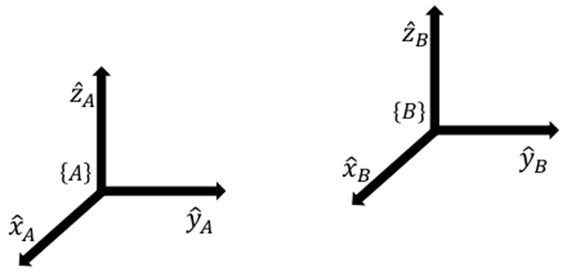
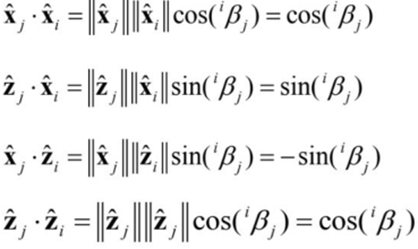
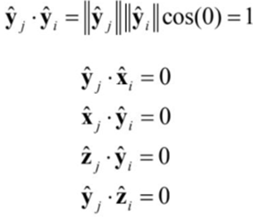
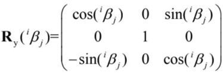
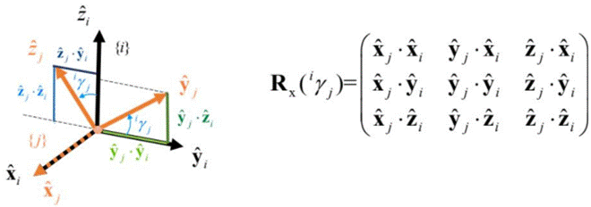
_archivos/image035.gif)
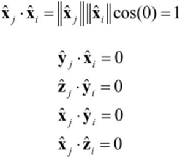
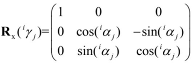
_archivos/image038.gif)
_archivos/image039.gif)
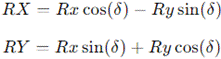
Para expresar la orientación de un elemento, se tienen que tomar en cuenta algunas consideraciones:
· La rotación no es conmutativa, es decir, es importante en qué orden se giran los ejes.
· Aunque se utilice una matriz de 9 elementos para representar una rotación, ésta se puede representar con 3 valores, ya que al ser una matriz ortonormal cuenta con 6 restricciones
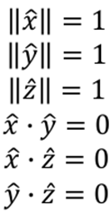
Por estas razones, existen convenciones de cómo se construye una matriz de rotación, cuáles son los valores que la construyen y cómo se aplica la rotación.
Ángulos extrínsecos fijos X-Y-Z
Para describir la rotación de un sistema {B} :
· Se comienza con un sistema de referencia 𝐴 =
· El sistema {B} se rota respecto a los ángulos del sistema {𝐴} en orden
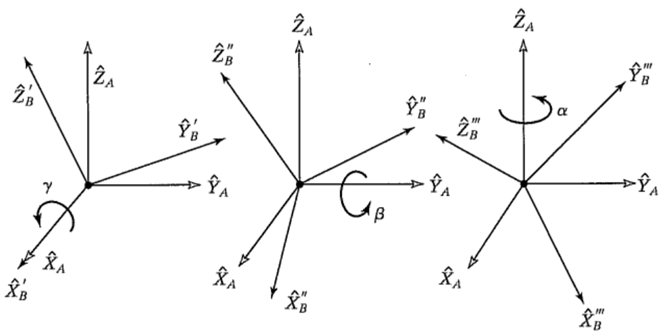
Ángulos de Euler
Según el teorema de Euler, el desplazamiento general de un cuerpo rígido con un punto fijo se puede describir mediante una rotación alrededor de un único eje. Los ángulos de Euler son un conjunto de tres ángulos que definen esta rotación en el espacio tridimensional. Estos ángulos permiten describir la orientación de un cuerpo mediante una secuencia de tres rotaciones alrededor de los ejes principales.
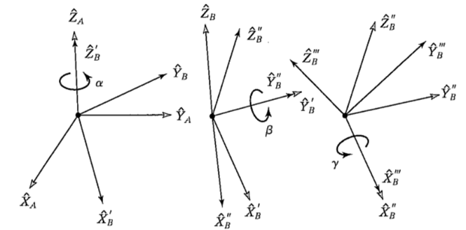
Bloqueo Gimball
Al usar ángulos intrínsecos, es posible perder un grado de libertad si el eje intermedio se gira de tal modo que los otros dos ejes sean coincidentes.
Teorema de Chasles
Este teorema establece que cualquier desplazamiento de un cuerpo rígido equivale a la suma de una traslación de cualquier punto del cuerpo y una rotación alrededor de un eje que pasa por ese punto. Esta combinación de traslación y rotación se conoce como movimiento complejo.
ORIENTACIÓN RELATIVA Y ABSOLUTA
La orientación absoluta se mide respecto a un sistema de coordenadas global fijo, mientras que la orientación relativa se mide en relación con otro objeto o sistema de coordenadas local. Por ejemplo, el ángulo de un eslabón en un mecanismo puede medirse respecto al suelo (orientación absoluta) o respecto a otro eslabón (orientación relativa).
2.4 Traslación y rotación.
TRASLACIÓN
Una definición de traslación es: Todos los puntos en un cuerpo tienen el mismo desplazamiento.
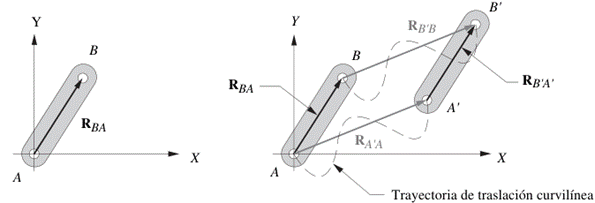
ROTACIÓN
Una definición de rotación es: Puntos diferentes del cuerpo sufren desplazamientos diferentes, y por lo tanto, existe una diferencia de desplazamiento entre dos puntos cualesquiera elegidos.
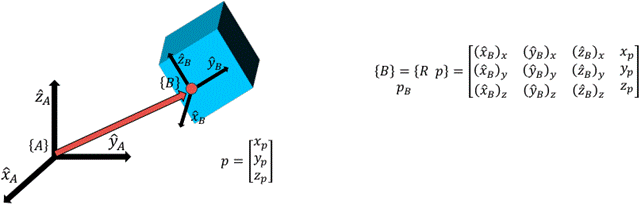
MOVIMIENTO COMPLEJO
El movimiento complejo combina simultáneamente la traslación y la rotación. Esto significa que un cuerpo puede desplazarse de una posición a otra mientras cambia su orientación angular. Un ejemplo típico es el movimiento de un objeto lanzado al aire, que sigue una trayectoria parabólica (traslación) mientras rota sobre su propio eje (rotación).
Matemáticamente, el movimiento complejo se puede expresar como la suma vectorial de la componente de traslación y la componente de rotación:
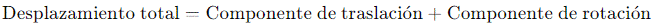
El Teorema de Chasles establece que cualquier desplazamiento de un cuerpo rígido equivale a la suma de una traslación de cualquier punto del cuerpo y una rotación alrededor de un eje que pasa por ese punto.
2.5 Formulación de Gibbs para la rotación.
FORMULACIÓN DE GIBBS PARA LA ROTACIÓN
La formulación de Gibbs es una representación matemática que describe la orientación de un cuerpo rígido mediante el uso de un vector axial.
Esta formulación se basa en el concepto de que cualquier rotación en el espacio tridimensional puede describirse mediante un único eje y un ángulo de rotación alrededor de ese eje.
Concepto de Vector de Gibbs
El vector de Gibbs es un vector que apunta en la dirección del eje de rotación y cuya magnitud está relacionada con el ángulo de rotación. Esta formulación ofrece una manera eficiente y compacta de representar rotaciones, especialmente en problemas de cinemática y dinámica.
La relación entre el vector de Gibbs y la matriz de rotación se define de la siguiente manera:
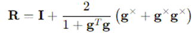
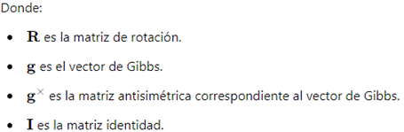
Ventajas de la Formulación de Gibbs
· Simplicidad matemática: Reduce la complejidad de las operaciones necesarias para calcular rotaciones en el espacio tridimensional.
· Eficiencia computacional: Es más eficiente que otras representaciones, como los ángulos de Euler o las matrices de rotación completas, especialmente en simulaciones por computadora.
· Evita singularidades: A diferencia de los ángulos de Euler, la formulación de Gibbs no sufre de problemas de singularidad o "gimbal lock", lo que la hace más robusta para aplicaciones en robótica y gráficos por computadora.
2.6 Transformaciones homogéneas.
MAPEO
Consideraremos el caso general en el que conocemos la descripción de un punto p desde un sistema B, y queremos conocer su descripción desde un sistema 𝐴, conociendo la descripción de B desde 𝐴.
Para obtener esta descripción, se tiene que referir la posición de P a un sistema intermedio, con la misma orientación de 𝐴. Esto haría que esté referido a la misma base que la posición B y se puedan sumar.
Esto se logra pre-multiplicando el vector de posición de P por la matriz de rotación de B desde 𝐴.
ESTRUCTURA DE UNA TRANSFORMACIÓN HOMOGÉNEA
Esta operación se puede comprimir como una única multiplicación entre matrices y vectores.
Siendo T conocida como transformación homogénea
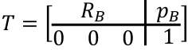
La transformación homogénea simplifica los cálculos cuando se tienen que hacer varias operaciones de forma sucesiva.
La última fila de la transformación se agrega para que el resultado matemático sea congruente, pero en otras aplicaciones, se pueden interpretar como un vector de perspectiva y un factor de escala.
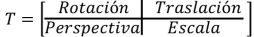
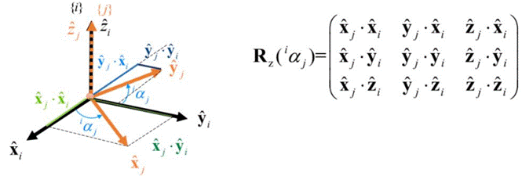
TRANSFORMACIONES HOMOGÉNEAS
Las transformaciones homogéneas integran traslación y rotación en una única matriz 4x4. Esto facilita las operaciones matemáticas para cambiar de sistemas de referencia y concatenar movimientos en cuerpos rígidos.
Para obtener un vector de posición referenciado desde una base anterior a la que se conoce:
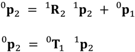
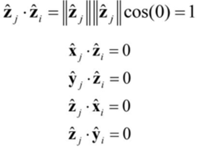
Una transformación homogénea se puede interpretar como información de un frame del robot ó como un operador para transformar información de un punto referido a una base y referirlo a otro.
La multiplicación de transformaciones homogéneas de forma sucesiva permite cambiar la referencia de un punto.
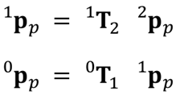
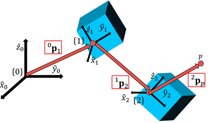
_archivos/image062.gif)
_archivos/image065.gif)
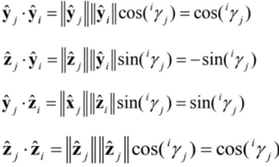
INVERTIR TRANSFORMACIONES
La inversa de una transformación homogénea también sirve para cambiar entre qué sistemas se hace referencia. Algebraicamente se comporta de manera similar a una matriz de rotación.
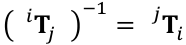
Esta inversa se puede obtener de forma directa o de forma analítica, lo cual suele ser más eficiente al ejecutarse en cálculos o simulaciones.
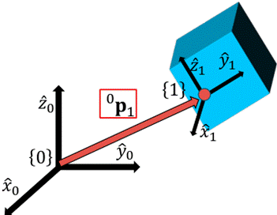
Suponiendo que conocemos la descripción del sistema 1 visto desde el sistema cero, es decir, 0𝐑1 , 0𝐩1 y podemos construir 0𝐓1 , deberíamos obtener 1𝐑0 , 1𝐩0 . Primero, para obtener la matriz de rotación.
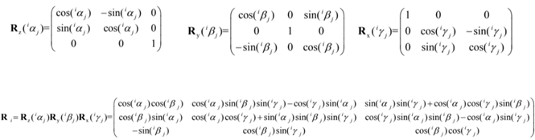
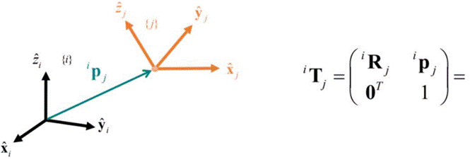
Podemos también plantear el vector de posición 0𝐩1 visto desde el sistema {1}:
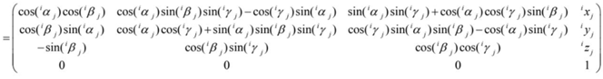
Sabiendo que este vector tendría que ser cero:
Con lo que tenemos la matriz de transformación sin necesidad de calcular la inversa.
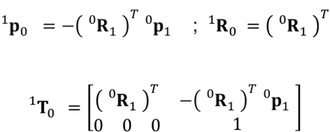
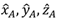
3. Cinemática espacial.
3.1 Tipos de estructuras y método de Denavit Hartenberg.
TIPOS DE ESTRUCTURAS EN ROBÓTICA
Los robots manipuladores presentan diferentes tipos de estructuras dependiendo de su configuración mecánica y el tipo de tareas que realizan. Estas estructuras pueden clasificarse en función de sus grados de libertad, su tipo de articulaciones y su disposición geométrica.
Clasificación de estructuras según su configuración mecánica
Robots de cadena abierta
Son los más comunes en la industria y consisten en una serie de eslabones conectados de manera secuencial, donde cada eslabón depende del movimiento del anterior.
Ejemplo: Un brazo robótico industrial, que puede ser de tipo SCARA o articulado.
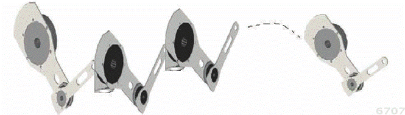
Desde el punto de vista mecánico, la cadena cinemática se dice que es abierta cuando hay sólo una secuencia de eslabones sin que las dos puntas terminales de la cadena desde la base hasta el extremo final se unan, es decir que no formen un lazo cerrado, de otra manera sería una cadena cinemática cerrada. Los servomotores o actuadores se utilizan para formar las articulaciones, las cuales son las encargadas de transmitir la energía para producir movimiento a cada uno de los eslabones que conforman al robot.
Cada articulación contribuye con un grado de libertad, siendo n no sólo la dimensión del vector de posición, sino que también indica el número de articulaciones que corresponde al número de grados de libertad (abreviado gdl).
Las articulaciones (joints) pueden producir movimiento rotacional o movimiento lineal de translación. A las articulaciones que producen movimiento giratorio o rotacional se les denomina articulaciones rotacionales. Por otro lado, a las que producen movimiento lineal se les denomina articulaciones prismáticas o lineales.
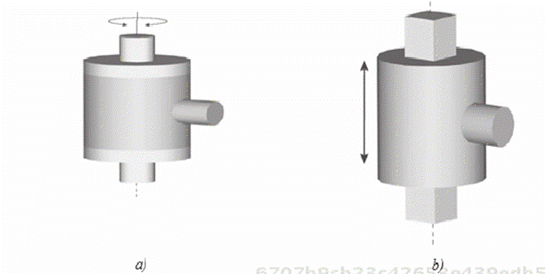
Tipos de articulaciones: a) Rotacional, b) Lineal o prismática
Un eslabón (link) está formado por una barra metálica acoplada mecánicamente al rotor y al estator de la siguiente articulación.
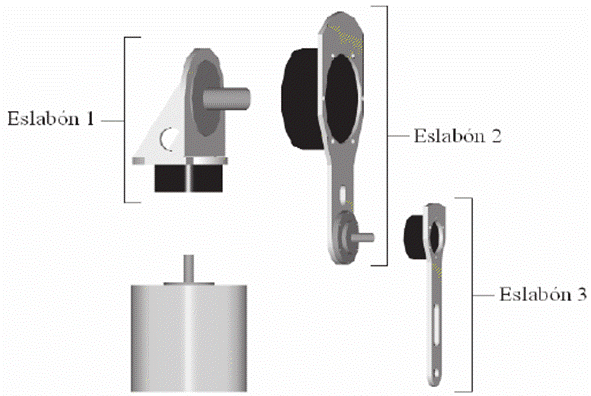
El espacio de trabajo (workspace) de un robot manipulador es el espacio o lugar donde el robot puede realizar todos sus posibles movimientos. El espacio de trabajo está determinado por la geometría del robot y la naturaleza de sus articulaciones (lineales y rotacionales).
El espacio de trabajo de un robot industrial se encuentra acondicionado por sensores especiales y cercas de seguridad para que ninguna persona pueda invadir su área. Un robot industrial puede tener un peso de más de tres toneladas y alcanzar velocidades superiores a 3000 mm/seg. Mientras el robot está en movimiento, resulta peligroso para un usuario que se encuentre dentro de su espacio de trabajo.
El extremo final (end-effector) es la parte terminal o final del último eslabón, destinado a colocar la herramienta adecuada para una aplicación específica. La posición del extremo final se representa por [x, y, z}T y su orientación se denota a través de los ángulos de Euler.
Robots de cadena cerrada
En este tipo de estructura, los eslabones están conectados de manera que forman un lazo cerrado, lo que les da mayor rigidez y estabilidad.
Ejemplo: Robots tipo Delta, utilizados en aplicaciones de alta velocidad como el ensamblaje de piezas electrónicas.
Robots móviles
Incluyen robots con ruedas, patas o combinaciones de ambos que pueden desplazarse en diferentes terrenos.
Ejemplo: Robots de exploración planetaria como el Perseverance de la NASA.
Clasificación de estructuras según el tipo de articulación
La estructura fundamental de los robots industriales es la cinemática abierta, la cual puede tener diferentes combinaciones de articulaciones rotacionales y prismáticas dando origen a diversos tipos de robots. aquí se presenta la clasificación de robots industriales con base en las tres primeras articulaciones del robot, es decir sin incluir la muñeca o garra colocada en su extremo final. De acuerdo con lo anterior, los robots industriales se clasifican como:
Robots cartesianos PPP
Se mueven en ejes X, Y y Z mediante deslizamientos lineales. Utilizados en aplicaciones de mecanizado y ensamblaje.
Los manipuladores cuyas primeras tres articulaciones son prismáticas se les denomina robots cartesianos, y este tipo de robots también son conocidos como robots pórticos o lineales.
El modelo cinemático del robot cartesiano es más sencillo en contraste con otras configuraciones de robots, debido a que presenta características lineales. Este tipo de robot es útil en aplicaciones de corte de mascarillas, graficadores, taladros automáticos, plotters, mesa de coordenadas cartesianas, etc.
El extremo final del robot se programa en coordenadas cartesianas, el espacio de trabajo de este manipulador es un paralelepípedo recto y su estructura mecánica presenta baja destreza debido a que todas sus articulaciones son prismáticas.
Robots cilíndricos RPP
Combinan movimiento lineal y rotacional, lo que les permite alcanzar posiciones con mayor flexibilidad. Se utilizan en soldadura y manipulación de materiales.
La configuración cilíndrica tiene la articulación de la base rotacional, mientras que la segunda y tercera articulación son prismáticas. Entre las aplicaciones de robots manipuladores en esta configuración se encuentran aquellas que procesan cavidades horizontales y transporte de objetos.
Su estructura mecánica es compleja y su espacio de trabajo es la porción de un cilindro hueco. El origen del sistema de referencia cartesiano para el robot en la configuración cilíndrica se ubica en la articulación de la base. Los ejes z1 y z2 son paralelos. El eje z3 es perpendicular a los ejes z1 y z2.
Robots esféricos RRP
Tienen ejes de rotación que permiten movimientos en coordenadas polares. Aplicaciones en ensamblaje y manipulación de objetos en espacios reducidos.
La configuración esférica presenta una construcción más compleja que la antropomórfica, la articulación rotacional del codo es sustituida por una articulación prismática o lineal. Los ejes de movimiento de las articulaciones son mutuamente perpendiculares.
El nombre de esta configuración deriva del hecho que la posición del extremo final puede ser programada en coordenadas esféricas.
Ejemplo de esta configuración de robots manipuladores es el robot Stand-ford, cuya principal aplicación se encuentra en el mecanizado de piezas automotrices y la manipulación de objetos sobre el piso.
El origen del sistema de referencia esférico se encuentra localizado en la intersección de los ejes z1 y z2; el espacio de trabajo de esta configuración es una esfera hueca.
Robots antropomórficos RRR
Poseen múltiples grados de libertad gracias a sus articulaciones rotacionales, asemejándose al brazo humano. Son los más utilizados en la industria automotriz para tareas de ensamblaje.
Los brazos mecánicos o robots manipuladores que tienen la configuración antropomórfica presentan mayor destreza en su espacio de trabajo, ya que sus eslabones están unidos por tres articulaciones rotacionales. El espacio de trabajo de la configuración antropomórfica corresponde a una esfera hueca, cuyo radio es igual a la suma de longitudes de sus eslabones. Por similitud con el brazo humano (ergocidad), la segunda articulación se conoce como hombro (shoulder) y la tercera articulación se llama codo (elbow).
El sistema de referencia cartesiano fijo Σ0 se encuentra sobre la base del robot, donde el eje z0 coincide con el eje de rotación de la articulación de la base z1. El eje z0 es ortogonal a los ejes de rotación z2 y z3 del hombro y codo, respectivamente. Los ejes z2 y z3 son paralelos entre sí.
Robots SCARA RRP
Poseen múltiples grados de libertad gracias a sus articulaciones rotacionales, asemejándose al brazo humano. Son los más utilizados en la industria automotriz para tareas de ensamblaje.
Una geometría especial de robots industriales es el tipo SCARA (Selective Compliance Assembly Robot Arm). Es un brazo planar antropomórfico de dos articulaciones rotacionales para la base y hombro, respectivamente, que se mueve en un plano horizontal; la tercera articulación es prismática.
Para este tipo de configuración todos los ejes de movimiento z1, z2 y z3 son paralelos entre sí. La estructura mecánica es de alta rigidez para soportar cargas en forma vertical y para control de fuerza en el plano horizontal, por lo que la configuración SCARA es adecuada para tareas de ensamble con pequeños objetos.
MÉTODO DE DENAVIT - HARTENBERG
El método de Denavit-Hartenberg (DH) es una de las convenciones más utilizadas para describir la relación geométrica entre los eslabones de un robot. Esta metodología permite representar el movimiento de los manipuladores mediante una serie de transformaciones homogéneas.
Fue propuesto por Jacques Denavit y Richard S. Hartenberg en 1955 y permite representar la posición y orientación de los eslabones de un robot mediante una serie de transformaciones homogéneas.
Este método permite describir la configuración espacial de los eslabones y articulaciones de un robot mediante la asignación de cuatro parámetros a cada uno de sus eslabones, facilitando la formulación de las ecuaciones de movimiento y la obtención de las matrices de transformación
A medida que los robots se han vuelto más complejos, la necesidad de un método sistemático y uniforme para describir sus movimientos ha sido crucial.
El método DH ha permitido unificar la manera en que los eslabones de un robot se representan matemáticamente, facilitando el diseño, análisis y control de los robots manipuladores.
El método DH ha evolucionado significativamente desde su creación. Originalmente, se concibió como una herramienta matemática para describir cadenas cinemáticas de robots industriales, pero con el tiempo se ha aplicado en una variedad de áreas, incluyendo la robótica móvil, la biomecánica y la exploración espacial.
Su adopción como estándar en la investigación y desarrollo de robots ha permitido un lenguaje común entre ingenieros y científicos en todo el mundo
Definición de los Parámetros DH
El método DH define cuatro parámetros que describen la relación entre dos eslabones consecutivos de un robot:
1. θi (Ángulo de la articulación): Representa la rotación en torno al eje Z del eslabón anterior para alinear el eje X del nuevo eslabón.
2. di (Desplazamiento de la articulación): Es el offset; la distancia a lo largo del eje Z entre los dos sistemas de referencia.
3. ai (Longitud del eslabón): Es la distancia entre los ejes de las articulaciones medidas a lo largo del eje X.
4. αi (Ángulo de torsión del eslabón): Es el ángulo necesario para alinear el eje Z del eslabón anterior con el eje Z del siguiente eslabón.
Estos parámetros permiten definir una matriz de transformación homogénea Ti, la cual expresa la posición y orientación de un eslabón respecto al anterior.
Matriz de Transformación Homogénea
La matriz de transformación homogénea para cada eslabón se define como:
Esta matriz permite calcular la posición y orientación del eslabón en función de los parámetros DH.
Procedimiento para Asignar las Tramas DH
Para aplicar el método DH a un manipulador robótico, se deben seguir los siguientes pasos:
1. Identificar los ejes de las articulaciones. Cada articulación tiene un eje de movimiento que se usa como referencia.
2. Asignar sistemas de coordenadas locales a cada eslabón. Se colocan en los extremos de cada eslabón.
3. Definir los cuatro parámetros DH para cada eslabón. Se determina el conjunto de θi, di, ai y αi para cada eslabón.
4. Construir la matriz de transformación para cada eslabón. Se usa la ecuación de transformación homogénea.
5. Multiplicar secuencialmente las matrices. Esto permite obtener la posición y orientación del efector final respecto a la base.
Ejemplo de Aplicación
Consideremos un brazo robótico planar de dos eslabones. Supongamos que los eslabones tienen las siguientes características:
La matriz de transformación total se obtiene como:
Donde T1 y T2 son las matrices de transformación individuales de cada eslabón.
3.2 Ecuaciones de cerradura en orientación y posición.
ORIENTACIÓN Y POSICIÓN
Las ecuaciones de cerradura en orientación y posición son fundamentales en la cinemática de robots, ya que permiten describir de manera precisa la relación entre la configuración de un manipulador y su posición y orientación en el espacio. Estas ecuaciones se derivan de la necesidad de establecer una correspondencia matemática entre las variables de articulación del robot y la posición y orientación de su efector final. A continuación, se desarrolla una explicación detallada sobre estos conceptos clave en robótica.
INTRODUCCIÓN A LAS ECUACIONES DE CERRADURA
Las ecuaciones de cerradura se utilizan para describir las restricciones geométricas impuestas por la estructura de un robot. Se denominan así porque expresan relaciones que deben cumplirse para que el robot tenga una configuración válida en el espacio de trabajo. En términos generales, estas ecuaciones se derivan de la composición de las transformaciones homogéneas de cada uno de los eslabones del robot.
En un manipulador en serie, cada eslabón está conectado al siguiente a través de una articulación, lo que genera una cadena cinemática abierta. Las ecuaciones de cerradura en este caso describen la relación entre las coordenadas de las articulaciones y la posición y orientación del efector final. En un robot de estructura cerrada, como los manipuladores paralelos, estas ecuaciones aseguran que el efector final cumpla con las restricciones geométricas impuestas por los eslabones y articulaciones.
Para entender mejor la importancia de las ecuaciones de cerradura, es necesario considerar que la robótica involucra el análisis y diseño de mecanismos que requieren precisión en el control del movimiento. En un manipulador mecánico, cada articulación puede estar representada por un conjunto de coordenadas generalizadas, y la relación entre estas coordenadas y la ubicación del efector final debe estar matemáticamente bien definida.
Desde un punto de vista práctico, las ecuaciones de cerradura ayudan a verificar si un robot puede alcanzar una posición específica en su espacio de trabajo sin violar sus restricciones físicas. Esto es particularmente importante en el diseño de sistemas automatizados donde la exactitud y repetibilidad son críticas. En muchos casos, los robots deben operar en entornos restringidos y cumplir con tareas específicas, como soldadura, ensamblaje o manipulación de objetos, lo que hace que la correcta formulación de las ecuaciones de cerradura sea esencial para evitar colisiones y optimizar el rendimiento.
Las ecuaciones de cerradura se pueden aplicar en diversas áreas de la robótica, incluyendo la planificación de movimientos, el control de trayectorias y la simulación de robots. La correcta implementación de estas ecuaciones en algoritmos computacionales permite desarrollar sistemas eficientes y precisos en aplicaciones industriales, médicas y de exploración espacial.
FORMULACIÓN MATEMÁTICA
Las ecuaciones de cerradura pueden dividirse en dos componentes principales: las ecuaciones de cerradura para la posición y las ecuaciones de cerradura para la orientación. Ambas son necesarias para describir completamente la configuración del robot en el espacio tridimensional.
Ecuaciones de cerradura para la posición
La posición de un efector final en el espacio cartesiano está dada por el vector de posición , que se obtiene a partir de la concatenación de las transformaciones homogéneas de cada articulación del robot:
donde:
En términos del modelo de Denavit-Hartenberg (DH), la matriz homogénea de transformación T que describe la posición y orientación del efector final respecto al sistema base es:
donde cada Ti es una matriz de transformación homogénea que representa la rotación y traslación de la articulación respecto a la anterior.
La formulación matemática de estas ecuaciones es crucial para el diseño y análisis de robots industriales. En un entorno de fabricación automatizada, un robot debe ser capaz de moverse de manera precisa y eficiente.
Para ello, es necesario garantizar que la posición alcanzada por el efector final corresponda exactamente a la deseada. Esto se logra aplicando las ecuaciones de cerradura en la planificación del movimiento y en el control del robot.
El uso de matrices homogéneas permite describir la posición del efector final en un espacio tridimensional, teniendo en cuenta todas las articulaciones y restricciones impuestas por la estructura del robot. Además, estas ecuaciones se pueden resolver para determinar las coordenadas de las articulaciones cuando se conoce la posición deseada del efector final, lo que es esencial en la cinemática inversa.
Ecuaciones de cerradura para la orientación
La orientación del efector final se describe mediante la matriz de rotación Q, que relaciona el sistema de referencia base con el sistema del efector final:
Las matrices Qi pueden representarse de varias formas, incluyendo:
· Matrices de cosenos directores,
· Ángulos de Euler,
· Cuaterniones.
La elección de la representación depende del contexto y de la aplicación, ya que cada una tiene ventajas y desventajas en términos de estabilidad numérica y facilidad de interpretación.
La orientación de un manipulador es fundamental en tareas donde la dirección de la herramienta debe controlarse con precisión, como en operaciones de ensamblaje, corte o impresión 3D. El correcto modelado de la orientación permite garantizar que la herramienta se alinee con el objeto de trabajo de manera exacta.
Un aspecto clave de la orientación es la singularidad, que ocurre cuando ciertas configuraciones del robot provocan pérdidas de grados de libertad en la orientación.
En estos casos, es importante analizar las ecuaciones de cerradura para evitar posiciones en las que el robot pueda perder control sobre la orientación del efector final.
En la práctica, la combinación de las ecuaciones de cerradura de posición y orientación permite describir completamente la configuración del robot en su espacio de trabajo. Esto facilita la programación y el control de movimientos, asegurando que el robot pueda ejecutar sus tareas de manera eficiente y segura.
3.3 Cinemática de cadenas abiertas.
CINEMÁTICA DE CADENAS ABIERTAS
La cinemática de cadenas abiertas es una rama fundamental de la robótica que estudia el movimiento de robots manipuladores formados por una secuencia de eslabones conectados en serie mediante articulaciones.
Este tipo de estructuras es común en robots industriales y otros sistemas automatizados donde se requiere un alto grado de precisión en la manipulación de objetos.
INTRODUCCIÓN
El estudio de la cinemática de cadenas abiertas permite analizar cómo la configuración de un robot afecta la posición y orientación de su efector final.
Una cadena cinemática abierta se compone de una secuencia de eslabones unidos por articulaciones, donde cada articulación puede ser de tipo revoluta (permitiendo rotación) o prismática (permitiendo traslación).
Los robots manipuladores industriales están compuestos en su mayoría por cadenas abiertas debido a la facilidad de análisis y control que ofrecen. Cada articulación introduce un grado de libertad, lo que permite calcular la posición y orientación del efector final a partir de las coordenadas articulares.
En estos sistemas, el número de grados de libertad es un parámetro clave, ya que determina la capacidad del robot para alcanzar diferentes puntos en su espacio de trabajo.
Desde una perspectiva histórica, el desarrollo de la robótica ha estado influenciado por la necesidad de realizar tareas repetitivas con alta precisión y velocidad. Desde los primeros robots industriales desarrollados en la década de 1960, la cinemática de cadenas abiertas ha sido el enfoque principal en el diseño de sistemas de manipulación.
El análisis cinemático de estos sistemas es crucial para garantizar que un robot pueda ejecutar movimientos suaves y precisos. En aplicaciones industriales, como la soldadura automatizada y el ensamblaje de componentes electrónicos, la precisión en la posición y orientación del efector final es esencial para la calidad del producto.
Además, en aplicaciones médicas como la cirugía robótica, la exactitud en el movimiento del robot es vital para evitar daños en los tejidos del paciente.
MODELADO MATEMÁTICO
El modelado matemático de las cadenas abiertas se basa en el uso de transformaciones homogéneas y matrices de rotación para describir la relación entre los diferentes eslabones del robot.
Una de las metodologías más utilizadas es la parametrización de Denavit-Hartenberg (DH), la cual proporciona una representación sistemática de la configuración del robot.
Transformaciones homogéneas
Una transformación homogénea es una matriz 4 X 4 que representa la combinación de una rotación y una traslación en el espacio tridimensional. Se define como:
donde:
Mediante la concatenación de estas transformaciones homogéneas, es posible determinar la posición y orientación del efector final en función de las coordenadas articulares. Esta representación matemática es esencial para la programación y control de robots, ya que permite predecir su comportamiento ante diferentes configuraciones articulares.
Parámetros de Denavit-Hartenberg
El método de Denavit-Hartenberg es una convención estandarizada para describir la geometría de un robot manipulador mediante cuatro parámetros.
Estos parámetros permiten definir la matriz de transformación homogénea para cada articulación de la siguiente forma:
Aplicando sucesivamente estas transformaciones desde la base del robot hasta su efector final, se puede obtener su configuración espacial. Esta metodología es ampliamente utilizada en simulaciones y análisis de robots industriales, permitiendo desarrollar modelos de control eficientes y precisos.
En la práctica, la parametrización de Denavit-Hartenberg es utilizada en software de simulación y control de robots, como MATLAB y ROS (Robot Operating System), para facilitar la programación y análisis de manipuladores. Su correcta aplicación permite optimizar el desempeño del robot, minimizando errores y maximizando la eficiencia en la ejecución de tareas.
El análisis matemático de la cinemática de cadenas abiertas es una herramienta esencial en el diseño y control de robots. A través del uso de transformaciones homogéneas y parámetros de Denavit-Hartenberg, es posible modelar de manera precisa la configuración de un robot y predecir su comportamiento en diferentes escenarios. Esto no solo facilita su programación y control, sino que también mejora su eficiencia en aplicaciones industriales, médicas y de exploración espacial.
3.4 Método solución de la cinemática directa e inversa.
CINEMÁTICA DIRECTA E INVERSA
El estudio de la cinemática en robótica es esencial para la planificación y control del movimiento de los manipuladores. En particular, la solución de la cinemática directa e inversa permite establecer la relación entre las coordenadas articulares y la posición y orientación del efector final en el espacio de trabajo. A continuación, se presentan los principios fundamentales y métodos de solución para ambos problemas.
La cinemática se ocupa del estudio del movimiento de los robots sin considerar las fuerzas que lo causan. Se puede dividir en dos problemas fundamentales:
· Cinemática directa: Dadas las coordenadas de las articulaciones de un robot, se determina la posición y orientación del efector final.
· Cinemática inversa: Dada la posición y orientación deseada del efector final, se deben encontrar los valores de las articulaciones que permitan alcanzar dicha configuración.
El problema de la cinemática inversa es generalmente más complejo que el de la cinemática directa, ya que puede implicar la resolución de ecuaciones no lineales y múltiples soluciones posibles. Además, es un problema que no siempre tiene una única solución, y en algunos casos, no tiene solución alguna debido a restricciones geométricas del robot.
Para entender estos conceptos en profundidad, es fundamental conocer la estructura de un robot manipulador. Un manipulador generalmente está compuesto por una serie de eslabones conectados mediante articulaciones, que pueden ser de tipo revoluta (permitiendo rotación) o prismática (permitiendo traslación). Estas articulaciones definen el espacio de movimiento del robot y determinan su capacidad para alcanzar diferentes puntos en el espacio tridimensional.
Los manipuladores en serie, que constituyen la mayoría de los brazos robóticos industriales, son ejemplos típicos de sistemas en los que se aplica la cinemática directa e inversa. En estos sistemas, cada articulación introduce un grado de libertad (DOF, por sus siglas en inglés), lo que permite determinar la posición del efector final como función de los valores articulares.
MÉTODO DE SOLUCIÓN DE LA CINEMÁTICA DIRECTA
Para resolver la cinemática directa, se emplea el uso de transformaciones homogéneas y parámetros de Denavit-Hartenberg (DH). Este método permite expresar la posición y orientación del efector final en función de las coordenadas articulares del robot.
Representación Matemática
La transformación de cada eslabón con respecto al anterior se expresa mediante una matriz homogénea de la forma:
La matriz de transformación total del efector final respecto a la base se obtiene mediante la multiplicación sucesiva de las matrices homogéneas:
A partir de esta matriz, se puede extraer la posición del efector final (x,y,z) y su orientación mediante la matriz de rotación incluida en T.
Aplicaciones de la Cinemática Directa
El análisis de la cinemática directa es el primer paso en el diseño de cualquier sistema robótico. Sin un modelo preciso de cómo las coordenadas articulares se relacionan con la posición y orientación del efector final, es imposible desarrollar algoritmos efectivos para el control y la planificación del movimiento del robot.
· Simulación y modelado de robots: Permite visualizar la configuración del robot en función de las variables articulares.
· Control de robots industriales: Se utiliza en sistemas de control en lazo abierto para predecir la ubicación del efector final.
· Animación y gráficos por computadora: Facilita la representación visual de movimientos robóticos en aplicaciones de entretenimiento y realidad virtual.
· Optimización de trayectorias: Permite calcular rutas eficientes para minimizar el tiempo de ejecución de una tarea.
MÉTODOS DE SOLUCIÓN DE LA CINEMÁTICA INVERSA
Métodos Algebraicos
Los métodos algebraicos consisten en resolver directamente las ecuaciones de la cinemática inversa utilizando técnicas analíticas. Se basan en la manipulación de ecuaciones trigonométricas y algebraicas para despejar los valores de las articulaciones. En muchos casos, se pueden expresar como un sistema de ecuaciones polinomiales que pueden resolverse utilizando técnicas como:
· Sustitución directa.
· Eliminación de variables.
· Uso de identidades trigonométricas.
Este método es efectivo para manipuladores con estructuras geométricas simples, como robots planos de dos o tres grados de libertad. Sin embargo, en manipuladores con más grados de libertad o configuraciones más complejas, la solución algebraica se vuelve impracticable debido a la aparición de ecuaciones altamente no lineales.
Método Geométrico
El método geométrico es un enfoque visual e intuitivo que utiliza las propiedades geométricas del manipulador para encontrar soluciones. Se basa en la aplicación de relaciones trigonométricas y teoremas geométricos, como el teorema del coseno y el teorema del seno, para calcular los ángulos articulares.
Este método es particularmente útil en manipuladores con estructuras simples, como brazos robóticos de dos o tres grados de libertad. En estos casos, se pueden construir triángulos en el espacio de trabajo del robot y determinar las posiciones de las articulaciones mediante cálculos trigonométricos. Sin embargo, en manipuladores más complejos con múltiples grados de libertad, este método puede volverse difícil de aplicar.
Métodos Numéricos
Cuando la solución algebraica no es posible, se recurre a métodos numéricos iterativos, como:
· Método de Newton-Raphson: Utiliza derivadas para aproximar la solución de las ecuaciones de la cinemática inversa.
· Método de gradiente descendente: Encuentra soluciones minimizando el error entre la posición deseada y la alcanzada.
· Método de optimización por algoritmos genéticos: Se emplea en problemas de cinemática inversa altamente no lineales.
Los métodos numéricos son ampliamente utilizados en robots con cinemática redundante o estructuras complejas, ya que permiten encontrar soluciones aproximadas incluso cuando no existe una solución analítica directa. Además, estos métodos permiten incluir restricciones adicionales en la solución, como evitar colisiones o mantener ciertas articulaciones dentro de rangos de movimiento específicos.
Métodos Basados en el Jacobiano
El método basado en el Jacobiano es un enfoque diferencial que utiliza la matriz jacobiana para relacionar las velocidades articulares con las velocidades del efector final. La matriz jacobiana J se define como:
donde X representa la posición y orientación del efector final, y q representa las coordenadas articulares.
El Jacobiano de un manipulador es una matriz que relaciona las velocidades articulares con las velocidades del efector final.
Su uso en la cinemática inversa permite encontrar soluciones a través de métodos iterativos como:
Método del Jacobiano inverso
Para resolver la cinemática inversa, se invierte la ecuación y se obtiene la matriz inversa del Jacobiano para calcular pequeños incrementos en las coordenadas articulares.
Método del pseudo-inverso de Moore-Penrose
Ideal para robots con redundancia cinemática. La matriz jacobiana no siempre es invertible, especialmente en configuraciones singulares del robot. En estos casos, se utilizan técnicas como la pseudo-inversa de Moore-Penrose para calcular una solución aproximada:
donde J+ es la pseudo-inversa de J. Este método es ampliamente utilizado en robots con cinemática redundante, ya que permite encontrar soluciones optimizadas minimizando ciertos criterios, como el consumo de energía o la proximidad a una configuración deseada.
Definición y Propiedades
El pseudo-inverso de Moore-Penrose ( o ) es una matriz única que se define, en la robótica de manipuladores redundantes, mediante la siguiente expresión:
De manera general, para una matriz de rango completo, el pseudo-inverso derecho se denota como .
Esta matriz satisface un conjunto de cuatro condiciones conocidas como las condiciones de Moore-Penrose, entre las cuales se encuentran:
Si la matriz en cuestión () es cuadrada y no singular, el pseudo-inverso es igual a la inversa ordinaria: .
Aplicación en Cinemática Diferencial
El pseudo-inverso es especialmente relevante en el análisis de manipuladores redundantes o robots móviles cuyo Jacobiano no es cuadrado, donde el número de variables articulares (columnas del Jacobiano) es mayor que el número de coordenadas del espacio operacional (filas).
En estos casos, el sistema de ecuaciones de la velocidad articular ( o ) no tiene una solución única. Al utilizar el pseudo-inverso, se obtiene la solución de mínimos cuadrados (least-squares solution) que además posee la norma mínima.
La solución general para la velocidad articular () se expresa como:
donde:
La técnica del pseudo-inverso del Jacobiano es fundamental para los algoritmos de cinemática diferencial inversa, un tema que se discute junto con el Jacobiano Transpuesto y el inverso amortiguado de mínimos cuadrados (damped least-squares inverse).
3.5 Perfiles de trayectoria.
PERFILES DE TRAYECTORIA EN ROBÓTICA
Los perfiles de trayectoria juegan un papel crucial en la planificación y ejecución de movimientos en robots manipuladores.
Estos perfiles determinan cómo se mueve un robot desde una posición inicial hasta una final, asegurando que el movimiento sea eficiente, preciso y adecuado a las necesidades de la tarea. En este documento, se exploran en profundidad los diferentes tipos de perfiles de trayectoria, su formulación matemática y sus aplicaciones en la robótica.
CONCEPTOS FUNDAMENTALES
La generación de trayectorias es un aspecto fundamental en la planificación de movimientos de los robots. Se encarga de definir la evolución temporal de la posición, velocidad y aceleración del efector final o de las articulaciones del robot para garantizar un movimiento óptimo y seguro.
Definición y Objetivos
La trayectoria de un robot puede describirse como la función que define su posición y orientación a lo largo del tiempo. Para lograr un movimiento preciso y eficiente, es necesario considerar diferentes factores, como restricciones físicas, requerimientos de velocidad y aceleración, y la dinámica del sistema.
Los principales objetivos de la planificación de trayectorias incluyen:
· Precisión: Asegurar que el efector final alcance con exactitud la posición deseada.
· Suavidad: Garantizar que la aceleración y velocidad sean continuas, evitando cambios bruscos que puedan dañar el sistema.
· Optimización: Minimizar el tiempo de desplazamiento y el consumo energético del robot.
· Seguridad: Evitar colisiones con obstáculos o partes del mismo robot.
Tipos de Trayectorias
Existen dos enfoques principales para definir trayectorias en robótica:
Trayectorias en el Espacio de Articulaciones:
· Se definen en términos de los valores de las articulaciones del robot.
· Son más fáciles de calcular porque evitan el problema de la cinemática inversa.
· Su desventaja es que pueden generar movimientos poco intuitivos o no óptimos en el espacio cartesiano.
Trayectorias en el Espacio Cartesiano:
· Se especifican en términos de la posición y orientación del efector final en el espacio tridimensional.
· Son más naturales para aplicaciones donde el efector final debe seguir una trayectoria específica, como en soldadura o ensamblaje.
· Requieren el uso de cinemática inversa para determinar los valores de las articulaciones correspondientes a cada punto de la trayectoria.
MODELADO
El modelado de trayectorias se basa en la formulación matemática que define el movimiento del robot. Se pueden emplear diferentes técnicas para interpolar y suavizar las trayectorias, asegurando que sean óptimas y factibles.
Perfiles de Velocidad y Aceleración
El movimiento de un robot no solo debe definirse en términos de posición, sino también en función de la velocidad y la aceleración. Un perfil de trayectoria adecuado debe garantizar que la velocidad y la aceleración permanezcan dentro de límites seguros para evitar vibraciones o daños en el sistema mecánico.
Los perfiles más comunes incluyen:
1. Perfil de Velocidad Constante:
Ø Se caracteriza por un movimiento uniforme entre dos puntos.
Ø No es eficiente en términos de aceleración, ya que genera cambios bruscos en el arranque y frenado.
2. Perfil Trapezoidal:
Ø Se compone de tres fases: aceleración constante, velocidad constante y desaceleración constante.
Ø Se utiliza en aplicaciones industriales donde es necesario un balance entre rapidez y suavidad.
3. Perfil de Velocidad en S (S-Curve):
Ø Suaviza la aceleración y desaceleración mediante una interpolación polinómica.
Ø Es ideal para evitar impactos mecánicos y reducir la vibración del robot.
Polinomios de Interpolación
Para definir trayectorias suaves y continuas, se emplean polinomios de distintos órdenes:
1. Interpolación Lineal:
Ø Es el método más simple y rápido, pero produce discontinuidades en la aceleración.
2. Polinomios Cúbicos:
Ø Garantizan continuidad en posición y velocidad.
Ø Se utilizan en sistemas donde la aceleración no es un factor crítico.
3. Polinomios Quinticos:
Ø Aseguran continuidad en posición, velocidad y aceleración.
Ø Son ideales para aplicaciones que requieren movimientos extremadamente suaves.
4. Interpolación con Mezclas Parabólicas:
Ø Se emplea en sistemas donde es necesario transitar suavemente entre distintos segmentos de una trayectoria.
3.6 Singularidades.
SINGULARIDADES EN ROBÓTICA
En robótica, las singularidades representan configuraciones específicas en las que un robot pierde grados de libertad efectivos, lo que puede afectar su control y desempeño. Estas posiciones críticas suelen estar relacionadas con la matriz jacobiana del manipulador, que describe la relación entre las velocidades articulares y cartesianas. Cuando la matriz jacobiana pierde rango, se vuelve no invertible y genera problemas en la ejecución de movimientos.
Las singularidades pueden clasificarse en diferentes tipos y afectan a los robots de distintas maneras. Desde un punto de vista práctico, es crucial comprender y evitar estas posiciones en aplicaciones industriales y de precisión. En este documento, exploramos detalladamente los conceptos teóricos y matemáticos detrás de las singularidades, su impacto en la robótica y las estrategias utilizadas para manejarlas.
DEFINICIÓN Y CLASIFICACIÓN
¿Qué es una Singularidad?
Una singularidad ocurre cuando el robot pierde grados de libertad efectivos en su espacio de trabajo. Matemáticamente, se identifica cuando la matriz jacobiana del robot se vuelve singular, es decir, cuando su determinante se anula y no es posible calcular su inversa. Esto implica que el robot puede experimentar pérdida de control en ciertas direcciones o requerir incrementos infinitos en las articulaciones para moverse en una dirección específica.
El estudio de las singularidades es esencial en la robótica, ya que permite diseñar robots más eficientes y evitar configuraciones problemáticas que podrían afectar su desempeño. En términos generales, estas posiciones pueden generar inestabilidad en los algoritmos de control, aumentar el consumo de energía y reducir la precisión del sistema. Comprender su origen y efectos es clave para optimizar la programación de movimientos y garantizar la seguridad operativa del robot.
Tipos de Singularidades
Las singularidades pueden dividirse en dos categorías principales:
1. Singularidades en la Frontera del Espacio de Trabajo:
Ø Se presentan cuando el robot está completamente extendido o completamente plegado.
Ø En estos casos, el efector final se encuentra en el límite del espacio de trabajo y su movimiento puede quedar restringido a ciertas direcciones.
Ø Un ejemplo común ocurre en robots con brazos extensibles, donde al alcanzar su máxima extensión se pierde la capacidad de moverse en ciertas direcciones.
2. Singularidades dentro del Espacio de Trabajo:
Ø Ocurren lejos de los límites del espacio de trabajo y suelen ser producto de la alineación de dos o más ejes de articulación.
Ø Este tipo de singularidades puede dificultar el control del robot, ya que pequeñas variaciones en las articulaciones pueden generar grandes cambios en la posición del efector final.
Ø Se presentan en robots con múltiples grados de libertad cuando algunos de sus ejes se alinean, lo que impide el control en ciertas direcciones.
Estas singularidades pueden afectar tanto la cinemática directa como la inversa del robot, generando problemas en la planificación de movimientos y en la ejecución de tareas de alta precisión. En muchos casos, la solución pasa por rediseñar la estructura del robot o modificar su estrategia de control para evitar estas configuraciones críticas.
Impacto de las Singularidades en el Control del Robot
Las singularidades afectan el rendimiento del robot de varias maneras:
· Incremento Infinito en la Velocidad Articular: A medida que el robot se acerca a una configuración singular, algunas articulaciones pueden requerir velocidades extremadamente altas para mantener un movimiento deseado en el espacio cartesiano. Esto no solo genera inestabilidad, sino que también puede sobrecargar los motores del sistema y reducir su vida útil.
· Pérdida de Grados de Libertad: En una posición singular, ciertas direcciones del espacio cartesiano se vuelven inaccesibles, lo que puede impedir que el robot complete una tarea específica. Esto es especialmente problemático en aplicaciones donde se requiere una alta flexibilidad, como la manipulación de objetos en entornos no estructurados.
· Inestabilidad en el Control: Los sistemas de control pueden presentar problemas cuando un robot opera cerca de una singularidad, ya que la retroalimentación puede volverse ineficaz y generar movimientos erráticos. Esto se debe a que los algoritmos de control dependen de la inversa de la matriz jacobiana, la cual no puede calcularse en una singularidad.
· Aumento en el Consumo Energético: Un robot operando en una configuración singular puede requerir mayores esfuerzos para mantener el control del movimiento, lo que se traduce en un mayor consumo de energía. En entornos industriales, esto puede representar un costo adicional significativo y afectar la eficiencia del sistema.
El impacto de las singularidades varía según el tipo de robot y la aplicación en la que se utilice. En robots industriales, por ejemplo, es común evitar estas configuraciones mediante el uso de software de planificación de trayectorias. En cambio, en robots móviles y humanoides, se pueden emplear algoritmos de control avanzados para minimizar sus efectos.
MODELADO MATEMÁTICO
La Matriz Jacobiana y su Relación con las Singularidades
La matriz jacobiana J de un manipulador relaciona las velocidades articulares con las velocidades cartesianas:
Sin embargo, en una singularidad, det(J) = 0 , lo que impide calcular J-1 y genera problemas en el control del robot.
La matriz jacobiana también se emplea para analizar la capacidad del robot para generar fuerzas y torques. Cuando el robot se encuentra en una singularidad, su capacidad para aplicar fuerzas en ciertas direcciones se ve comprometida, lo que puede afectar tareas como el ensamblaje de piezas o la manipulación de objetos pesados.
Cálculo de Singularidades en un Robot Planar de Dos Eslabones
Consideremos un robot planar de dos eslabones con las siguientes ecuaciones de posición del efector final:
La matriz jacobiana asociada es:
Para encontrar las singularidades, calculamos det(J) :
Esta expresión se anula cuando q2 = 0° o q2 = 180° , lo que significa que el robot entra en una configuración singular cuando los eslabones están completamente alineados.
4. Dinámica de manipuladores.
4.1 Propiedades de los cuerpos rígidos.
DINÁMICA DE MANIPULADORES ROBÓTICOS
La dinámica de manipuladores constituye un campo fundamental en la robótica que permite comprender el comportamiento de los robots manipuladores cuando están sometidos a fuerzas y movimientos.
A diferencia de la cinemática, que se limita a describir el movimiento sin considerar las causas, la dinámica establece relaciones matemáticas entre los pares y fuerzas aplicados en las articulaciones y los movimientos resultantes.
Este análisis resulta indispensable para el diseño de sistemas de control avanzados y para optimizar el rendimiento de los manipuladores robóticos en entornos industriales y de investigación.
CUERPOS RÍGIDOS
Los cuerpos rígidos constituyen los elementos fundamentales en el análisis dinámico de manipuladores robóticos. Estos componentes se caracterizan por mantener distancias constantes entre sus puntos independientemente de las fuerzas externas aplicadas.
Propiedades
En el contexto de la robótica, cada eslabón de un manipulador se modela como un cuerpo rígido con propiedades físicas específicas que determinan su comportamiento dinámico.
Entre estas propiedades, la masa del eslabón representa la cantidad de materia y determina la resistencia del cuerpo a cambios en su estado de movimiento lineal.
El centro de masa constituye el punto donde se puede considerar concentrada toda la masa del eslabón para cálculos dinámicos, lo que simplifica considerablemente el análisis matemático.
El tensor de inercia es una matriz 3×3 simétrica, esta caracteriza la distribución de masa del cuerpo respecto a los diferentes ejes y determina la resistencia del cuerpo a cambios en su movimiento angular. Esta propiedad es particularmente relevante en manipuladores que ejecutan movimientos rotacionales a altas velocidades.
en donde los elementos escalares están dados por:
El principio de D'Alembert establece que para cualquier cuerpo rígido en movimiento, la suma de las fuerzas externas más las fuerzas de inercia es igual a cero, lo que proporciona una herramienta matemática poderosa para el análisis dinámico de sistemas multicuerpo.
Cuando se considera el manipulador como un sistema de cuerpos rígidos acoplados, emergen propiedades adicionales como los efectos inerciales acoplados entre articulaciones, donde el movimiento de una articulación influye en la dinámica de otras.
Las fuerzas centrífugas y de Coriolis surgen debido al movimiento relativo entre los diferentes eslabones y son especialmente significativas durante trayectorias curvilíneas a altas velocidades.
La gravedad genera pares en las articulaciones que dependen de la configuración del manipulador, complicando el control pero siendo predecibles mediante modelos matemáticos adecuados.
4.2 Ecuaciones de Newton-Euler.
FORMULACIÓN
El formalismo de Newton-Euler (NE) representa un enfoque sistemático para derivar las ecuaciones dinámicas de manipuladores robóticos.
El enfoque consiste en aplicar la segunda ley de Newton (F = ma) para el movimiento traslacional y la ecuación de Euler (τ = Iα) para el movimiento rotacional a cada uno de los eslabones que componen el manipulador, considerándolos como cuerpos rígidos individuales.
Este método utiliza un procedimiento recursivo que aplica estas leyes fundamentales a cada eslabón del manipulador, comenzando por el eslabón base y propagando velocidades y aceleraciones hacia adelante hasta el efector final, para luego calcular fuerzas y pares retrocediendo desde el efector final hasta la base.
ALGORITMO RECURSIVO
La implementación de este método requiere un análisis recursivo que se desarrolla en dos fases principales:
Una propagación hacia adelante de velocidades y aceleraciones, comenzando desde la base del robot hasta el efector final, y una propagación hacia atrás de fuerzas y momentos, desde el efector final hacia la base.
Durante la propagación hacia adelante, se calculan las velocidades lineales y angulares, así como las aceleraciones de cada eslabón, considerando los efectos inerciales, centrífugos y de Coriolis.
En la propagación hacia atrás, se determinan las fuerzas y momentos en cada articulación necesarios para producir el movimiento deseado, incorporando también la influencia de fuerzas externas aplicadas al manipulador.
Este enfoque recursivo permite obtener un modelo dinámico completo del manipulador robótico que relaciona los pares o fuerzas aplicados en las articulaciones con los movimientos resultantes del sistema.
El algoritmo de Newton-Euler destaca por su eficiencia computacional, con una complejidad de orden O(n) donde n es el número de articulaciones del manipulador.
Esta característica lo hace especialmente adecuado para implementaciones en tiempo real en sistemas de control robótico.
Además, este formalismo facilita la incorporación de fuerzas externas y restricciones dinámicas, lo que resulta ventajoso para simular interacciones con el entorno o para el diseño de controladores que consideren la dinámica completa del sistema.
4.3 Ecuaciones de Euler-Lagrange.
EULER-LAGRANGE
Las ecuaciones de Euler-Lagrange proporcionan un enfoque energético elegante y sistemático para derivar las ecuaciones dinámicas de movimiento en manipuladores robóticos.
A diferencia del método de Newton-Euler, que se centra en fuerzas y momentos individuales que están actuando sobre cada eslabón, este método se basa en la formulación del Lagrangiano del sistema, es definido como la diferencia entre la energía cinética total y la energía potencial total del manipulador.
La ventaja conceptual de este enfoque radica en su tratamiento del robot como un sistema holístico (enfoque integral que considera las partes interconectadas de un todo, en lugar de abordarlo por partes), evitando el análisis detallado de fuerzas internas entre componentes.
El procedimiento comienza con la expresión de las energías cinética y potencial del manipulador en términos de las coordenadas generalizadas, que típicamente corresponden a las variables articulares.
La energía cinética incluye componentes debidos tanto al movimiento lineal como al rotacional de cada eslabón, considerando sus masas y tensores de inercia.
La energía potencial, principalmente gravitacional en la mayoría de los casos, depende de la configuración espacial del manipulador respecto al campo gravitatorio.
Aplicando las ecuaciones de Euler-Lagrange a este Lagrangiano, se obtiene un sistema de ecuaciones diferenciales de segundo orden que relaciona los pares o fuerzas aplicados en las articulaciones con las posiciones, velocidades y aceleraciones articulares.
Estas ecuaciones pueden expresarse en forma matricial como:
donde τ representa el vector de pares o fuerzas en las articulaciones, M(q) es la matriz de inercia del manipulador, C(q, q̇)q̇ engloba los términos centrífugos y de Coriolis, G(q) representa los efectos gravitacionales, f(q̇, fe) es el vector de ficción que incluye viscosa, coulomb y estática. Esta formulación permite identificar claramente los diferentes componentes dinámicos que afectan al movimiento del robot, facilitando el diseño de estrategias de control avanzadas.
El formalismo de Euler-Lagrange, aunque computacionalmente más intensivo que el método de Newton-Euler, proporciona una comprensión más profunda de las propiedades estructurales del sistema dinámico.
Propiedades como la simetría y positividad definida de la matriz de inercia, o la existencia de formulaciones alternativas para los términos de Coriolis que preservan propiedades energéticas del sistema, son más evidentes en este formalismo y resultan útiles para el análisis de estabilidad y el diseño de controladores.
4.4 Análisis de la potencia en las articulaciones.
ANÁLISIS DE LA POTENCIA
El análisis de potencia en las articulaciones de un manipulador robótico constituye un aspecto crucial para el diseño mecánico, la selección de actuadores y la optimización energética del sistema.
Este análisis permite cuantificar los requerimientos energéticos durante la ejecución de tareas y evaluar la eficiencia del robot, aspectos fundamentales para aplicaciones donde la autonomía energética o la disipación térmica son consideraciones críticas.
La potencia instantánea en cada articulación se define como el producto del par o fuerza aplicado por la velocidad articular correspondiente.
Esta relación matemática simple proporciona información valiosa sobre el flujo de energía en el sistema: valores positivos indican que el actuador aporta energía al sistema, mientras que valores negativos revelan que el actuador absorbe energía, actuando como un freno.
Este segundo escenario es particularmente relevante en manipuladores que realizan movimientos con cargas significativas, donde la energía potencial puede transformarse en energía cinética que debe ser disipada de manera controlada.
Perfiles de potencia
Los perfiles de potencia a lo largo de trayectorias específicas permiten identificar los picos de demanda energética, información esencial para dimensionar adecuadamente los actuadores y los sistemas de alimentación.
Estos perfiles también facilitan la identificación de fases de recuperación energética potencial, donde implementar sistemas de almacenamiento o reutilización de energía podría mejorar la eficiencia global del manipulador.
El análisis del trabajo mecánico realizado, calculado como la integral de la potencia en un intervalo de tiempo, proporciona una medida del consumo energético total asociado a una tarea específica.
La eficiencia energética puede optimizarse mediante la planificación de trayectorias que minimicen los requerimientos de potencia, aprovechando la dinámica natural del sistema y reduciendo las aceleraciones innecesarias.
Estrategias de control avanzadas que consideran los aspectos energéticos, como el control óptimo con criterios de minimización de energía, permiten mejorar el rendimiento energético sin comprometer la precisión o velocidad de las operaciones.
Adicionalmente, el análisis térmico derivado de los estudios de potencia resulta esencial para evaluar la generación de calor en los actuadores y diseñar sistemas de refrigeración adecuados, especialmente en aplicaciones que requieren operación continua a alta potencia.
5. Sistemas de control.
5.1 Sistemas de visión.
VISIÓN ARTIFICIAL
Los sistemas de visión artificial en robótica constituyen un pilar esencial en la transición hacia entornos altamente automatizados e inteligentes, donde la interacción de los robots con su entorno ya no se limita a respuestas preprogramadas, sino que se fundamenta en percepciones visuales dinámicas y adaptativas.
Dichos sistemas confieren a los robots la capacidad de interpretar su entorno mediante la captura, procesamiento y análisis de información visual, utilizando dispositivos de alta resolución, sensores tridimensionales, técnicas de procesamiento de imágenes en tiempo real y algoritmos avanzados de computación visual y aprendizaje automático.
Gracias a estas capacidades, los robots logran ejecutar tareas de alta complejidad que anteriormente eran exclusivas del juicio humano, tales como el reconocimiento de patrones complejos, la navegación autónoma en entornos no estructurados y altamente dinámicos, el seguimiento de trayectorias en movimiento, la adaptación a cambios imprevistos en la escena y la manipulación de objetos diversos en ambientes industriales, médicos y de investigación avanzada.
Sistema de Visión Robótico
Un sistema de visión robótico moderno está estructurado en varios módulos interdependientes que incluyen dispositivos de captura de alta sensibilidad (cámaras CCD, CMOS, sensores de profundidad como LIDAR y sistemas RGB-D), plataformas de adquisición de datos de alta velocidad, arquitecturas de procesamiento paralelizado mediante GPU y FPGA, y algoritmos de segmentación semántica, reconocimiento de formas, reconstrucción tridimensional de escenas y comprensión contextual de imágenes.
INTERPRETACIÓN
La interpretación de la información visual se lleva a cabo en niveles jerárquicos complejos: desde la detección de características geométricas básicas, pasando por la abstracción de objetos específicos, hasta alcanzar el razonamiento semántico de alto nivel sobre la situación ambiental.
Desafíos
Entre los retos principales se encuentran la necesidad de procesamiento de datos visuales de alta densidad en tiempo real, la robustez frente a variaciones lumínicas, oclusiones, ruido visual y cambios de escala.
Para afrontar estos desafíos, se emplean técnicas de optimización como la aplicación de filtros espaciales y temporales adaptativos, la selección inteligente de regiones de interés mediante métodos de atención computacional, y el uso de redes neuronales convolucionales profundas (CNN) para segmentación y clasificación automática de imágenes.
Entre sus aplicaciones sobresalen la manufactura inteligente con ensamblaje flexible, la medicina robótica mediante navegación endoscópica asistida, la inspección automatizada de infraestructuras críticas, la exploración de ambientes extremos como el espacio profundo y el ámbito submarino, y la robótica de servicio en entornos urbanos altamente cambiantes.
5.2 Linealización de modelos.
LINEALIZACIÓN
La dinámica de los sistemas robóticos, caracterizada por su comportamiento no lineal inherente debido a dependencias complejas de sus configuraciones, velocidades articulares y factores externos, demanda herramientas de análisis rigurosas que permitan su modelado y control de manera matemáticamente tratable.
La linealización de modelos constituye una metodología crucial para lograr esta simplificación, permitiendo representar localmente el comportamiento no lineal mediante una aproximación lineal alrededor de puntos de operación nominales a través de expansiones de Taylor de primer orden.
Esta técnica no solo posibilita la aplicación directa de metodologías de control lineal clásico para el diseño de controladores de trayectoria, sino que también permite optimizar simultáneamente aspectos como la estabilidad, la rapidez de convergencia y el desempeño transitorio del sistema robótico.
FEEDBACK LINEARIZATION
La linealización mediante realimentación, también denominada "feedback linearization", busca cancelar activamente las no linealidades estructurales introduciendo leyes de control que redefinen la dinámica del sistema, permitiendo su modelado como un conjunto de sistemas de segundo orden desacoplados.
La pertinencia de la linealización reside tanto en la reducción de la complejidad algorítmica para implementaciones en hardware de procesamiento limitado como en la mejora significativa de la predictibilidad del comportamiento bajo control, facilitando también el análisis formal de estabilidad, robustez y desempeño en escenarios de alta incertidumbre o perturbaciones externas.
5.3 Controladores recurrentes: PD y PID.
CONTROLADORES
En el contexto del control de robots manipuladores, los controladores PD (Proporcional-Derivativo) y PID (Proporcional-Integral-Derivativo) se han consolidado como los paradigmas más extendidos debido a su robustez teórica, su relativa simplicidad de implementación y su versatilidad para regular movimientos en sistemas de diversa complejidad.
PD
El controlador PD combina una acción proporcional al error de posición con una acción derivativa proporcional a la velocidad del error, proporcionando un compromiso eficaz entre rapidez de respuesta y amortiguamiento de oscilaciones.
A pesar de estas ventajas, su limitación principal reside en la incapacidad de eliminar errores en estado estacionario bajo condiciones de perturbaciones persistentes.
PID
El controlador PID supera esta deficiencia mediante la incorporación de una acción integral que acumula el error en el tiempo, logrando la eliminación completa del error estacionario y mejorando la robustez del sistema frente a variaciones paramétricas y perturbaciones externas.
La sintonización óptima de sus ganancias proporcional, integral y derivativa es una tarea crítica que puede abordarse mediante técnicas clásicas como Ziegler-Nichols o mediante estrategias modernas basadas en algoritmos evolutivos y aprendizaje por refuerzo.
La ubicuidad de los controladores PD y PID en la robótica contemporánea refleja su capacidad de adaptarse a sistemas de una amplia gama de escalas y velocidades operativas, desde robots colaborativos de alta precisión hasta plataformas móviles de exploración en ambientes no estructurados.
5.4 Sistemas no lineales y variantes con el tiempo.
DINAMICA DE SISTEMAS
El análisis riguroso de la dinámica de sistemas robóticos revela la presencia de estructuras altamente no lineales, donde la matriz de inercia dependiente de la configuración, los efectos de Coriolis y las fuerzas centrífugas, así como los términos gravitacionales, presentan relaciones funcionales complejas respecto a las posiciones y velocidades articulares.
Esta realidad introduce una complejidad sustancial en el modelado y control de los robots, especialmente cuando estas propiedades varían en el tiempo.
La presencia de sistemas variantes con el tiempo, donde las propiedades dinámicas del sistema evolucionan debido a factores como la manipulación de cargas variables, el desgaste mecánico, o los cambios ambientales, impone restricciones críticas sobre las estrategias de control tradicionales.
En estos escenarios, el análisis de estabilidad y desempeño no puede basarse en suposiciones de invariancia, requiriendo el uso de metodologías avanzadas como el análisis de Lyapunov de sistemas variantes, el control robusto basado en Γ-gap metric y la programación convexa de conjuntos invariantes.
ANÁLISIS DE LYAPUNOV
El análisis de estabilidad de Lyapunov, también conocido como el segundo método de Lyapunov, constituye una de las herramientas más poderosas y fundamentales en el estudio de la estabilidad de sistemas dinámicos no lineales, particularmente en el ámbito de la robótica avanzada.
A diferencia de los métodos tradicionales de resolución de ecuaciones diferenciales, el enfoque de Lyapunov permite determinar la estabilidad de un sistema sin necesidad de resolver explícitamente las ecuaciones de movimiento.
El procedimiento básico consiste en proponer una función escalar V(x), denominada función de Lyapunov, que actúe de manera análoga a una función de energía del sistema.
Esta función debe cumplir las siguientes condiciones: V(x) > 0 para todo x ≠ 0 y V(0) = 0. Posteriormente, se analiza la derivada temporal de V(x) a lo largo de las trayectorias del sistema.
Si esta derivada satisface 𝑉̇(x) ≤ 0, se garantiza que el sistema es estable en el sentido de Lyapunov; si adicionalmente 𝑉̇(x) < 0, se concluye estabilidad asintótica.
En el campo de la robótica, este método se utiliza ampliamente para analizar la estabilidad de manipuladores robóticos bajo diversas leyes de control, como el control PD o PID.
Por ejemplo, en un robot con múltiples grados de libertad (DOF), la función de Lyapunov típica puede expresarse como la combinación de energía cinética y un término de error de posición ponderado por matrices de ganancias positivas definidas.
Este enfoque permite no solo validar la estabilidad de sistemas bajo control convencional, sino también fundamentar el diseño de estrategias de control adaptativo y robusto.
Cabe destacar que, aunque el método proporciona garantías formales de estabilidad, no ofrece información detallada sobre el comportamiento transitorio del sistema, como el tiempo de asentamiento o la magnitud del sobre impulso.
Sin embargo, extensiones del método, como el principio de invariancia de LaSalle, permiten obtener condiciones adicionales para la estabilidad asintótica global en sistemas donde 𝑉̇(x) = 0 en subconjuntos no triviales del espacio de estados.
CONTROL ROBUSTO BASADO EN Γ-GAP METRIC
El diseño de sistemas de control robusto en robótica tiene como objetivo asegurar el desempeño deseado en presencia de incertidumbres paramétricas, perturbaciones externas y modelos dinámicos imprecisos.
Una herramienta teórica de gran importancia para evaluar la robustez de sistemas bajo incertidumbre es el denominado Γ-gap metric, propuesto como una métrica para cuantificar la distancia entre dos sistemas dinámicos y evaluar el grado de tolerancia que un controlador tiene frente a variaciones estructurales.
El Γ-gap metric mide, de manera formal, la distancia entre dos representaciones de plantas dinámicas, permitiendo determinar si un controlador diseñado para una planta nominal puede garantizar la estabilidad y el desempeño deseado incluso en presencia de perturbaciones o errores de modelado.
Este enfoque es crucial en el control de robots manipuladores, donde los modelos dinámicos derivados de la mecánica de cuerpos rígidos están sujetos a imprecisiones debido a simplificaciones o variaciones reales.
La estrategia de control robusto basada en Γ-gap metric implica tres pasos fundamentales:
1. Modelado nominal del sistema dinámico y definición del modelo perturbado.
2. Cálculo de la métrica Γ-gap entre el modelo nominal y el modelo real o perturbado.
3. Diseño del controlador de forma que el margen de estabilidad y desempeño sea garantizado dentro de los límites determinados por el Γ-gap.
Esta metodología permite diseñar controladores que no solo logran estabilidad interna frente a perturbaciones estructurales, sino que también aseguran un nivel preespecificado de desempeño dinámico, expresado típicamente en términos de normas H-infinito o L2.
En la práctica, el control robusto basado en Γ-gap se integra con otras técnicas avanzadas como la síntesis de controladores mediante optimización H-infinito, el control predictivo robusto y estructuras adaptativas que mejoran continuamente el modelo interno durante la operación real del robot.
Estas estrategias permiten enfrentar desafíos contemporáneos en entornos altamente dinámicos e inciertos, tales como la robótica asistencial, los vehículos autónomos y la exploración de entornos no estructurados.
La consideración de sistemas no lineales y variantes con el tiempo se ha convertido en un requisito indispensable para el diseño de robots modernos que operan en entornos impredecibles, tales como entornos urbanos inteligentes, espacios extraterrestres, entornos submarinos profundos y aplicaciones de rescate y asistencia en situaciones de desastre.
5.5 Sistemas de control adaptativos.
CONTROL ADAPTATIVOS
Los sistemas de control adaptativo representan una sofisticación conceptual y práctica avanzada dentro del campo de la robótica moderna.
Estos sistemas poseen la capacidad inherente de modificar sus parámetros internos de control de forma autónoma y continua en tiempo real, como respuesta a cambios en las características dinámicas internas del robot o en las condiciones del entorno externo, garantizando de este modo el mantenimiento del desempeño deseado frente a incertidumbres y perturbaciones imprevistas.
Control Basado en Modelo de Referencia
Entre las estrategias adaptativas más prominentes se encuentran el control basado en modelo de referencia, que ajusta los parámetros para minimizar la discrepancia entre la respuesta real del sistema y la respuesta deseada de un modelo de referencia, y el control adaptativo directo, que actualiza directamente los parámetros del controlador utilizando señales de error observadas.
ESTABILIDAD
La estabilidad de los sistemas de control adaptativo suele garantizarse mediante diseños de funciones de Lyapunov adaptativas, el uso de condiciones de persistencia de excitación y la aplicación de teorías de convergencia de parámetros adaptativos.
La implementación exitosa de sistemas de control adaptativo incrementa de manera significativa la robustez, eficiencia, capacidad de aprendizaje y autonomía de los robots, habilitando su operación en aplicaciones de alta variabilidad y complejidad, tales como la manufactura personalizada, la cirugía robótica de alta precisión, las operaciones de rescate en ambientes hostiles, y la exploración espacial y submarina en condiciones extremas.
6. Lenguajes de programación y sistemas.
6.1 Los tres niveles de programación.
NIVEL DE CONTROL
La programación robótica moderna se estructura en tres niveles jerárquicos que facilitan el control integral del sistema. Este nivel se encarga de definir los movimientos precisos de las articulaciones y del efector final del robot.
Se utilizan lenguajes de bajo nivel, como C o C++, para interactuar directamente con el hardware y garantizar respuestas en tiempo real.
El nivel de control es fundamental en la base de esta estructura, se encarga específicamente de gestionar los movimientos precisos de cada articulación y del efector final del robot.
Este nivel trabaja directamente con el hardware del robot, interpretando señales de bajo nivel y transformándolas en acciones físicas concretas.
La precisión milimétrica y la velocidad de ejecución son críticas en este nivel, pues cualquier error o latencia puede comprometer la integridad del sistema o la precisión de las tareas ejecutadas.
NIVEL DE TAREAS
El nivel intermedio, conocido como nivel de tareas, eleva la abstracción de la programación para permitir la interpretación y ejecución de operaciones más complejas.
Aquí se interpretan y gestionan las tareas globales del robot, como la manipulación de objetos o la ejecución de secuencias complejas.
Lenguajes de alto nivel, como Python o MATLAB, son comunes en este nivel debido a su facilidad para manejar abstracciones y estructuras de datos complejas.
Este nivel traduce comandos conceptuales como "recoger objeto" o "ensamblar componente" en secuencias coordinadas de movimientos básicos. Aquí se implementan algoritmos de planificación de trayectorias, evasión de obstáculos y manipulación de objetos.
Los lenguajes utilizados en este nivel suelen ofrecer primitivas y estructuras específicas para robótica, permitiendo que los desarrolladores expresen las intenciones de manipulación sin preocuparse por los detalles de bajo nivel de cada articulación.
NIVEL DE SUPERVISIÓN
En el nivel superior se encuentra el nivel de supervisión, que coordina la interacción del robot con su entorno y gestiona la sincronización de operaciones complejas en tiempo real. Este nivel coordina la interacción del robot con su entorno y supervisa las operaciones en tiempo real.
Se encarga de la planificación, toma de decisiones y adaptación a cambios en el entorno, asegurando una operación robusta y eficiente.
Este nivel incorpora capacidades avanzadas como visión artificial, aprendizaje automático y toma de decisiones basada en el contexto.
Los sistemas de supervisión monitorean constantemente los sensores del robot y el estado del entorno, ajustando dinámicamente las operaciones según sea necesario.
Además, este nivel facilita la interfaz con operadores humanos y otros sistemas automatizados, permitiendo la integración del robot en ecosistemas más amplios de producción o investigación.
6.2 Requerimientos de programación.
TIEMPO REAL
El procesamiento en tiempo real constituye uno de los pilares fundamentales, ya que los robots deben responder a eventos y ejecutar instrucciones dentro de plazos temporales predecibles y consistentes.
Las arquitecturas de software para robótica implementan planificadores de tareas con prioridades para garantizar que las operaciones críticas se completen dentro de los límites temporales establecidos.
Los sistemas operativos especializados para robótica, como RTOS (Real-Time Operating System), proporcionan garantías temporales que los sistemas operativos convencionales no pueden ofrecer, asegurando una respuesta determinista incluso en condiciones de alta carga computacional.
FIABILIDAD
La fiabilidad del software robótico es igualmente crucial, particularmente en aplicaciones donde los fallos pueden tener consecuencias graves.
Los sistemas robóticos modernos incorporan múltiples capas de protección, incluidos mecanismos de detección y recuperación de errores, monitores de salud del sistema y procedimientos de degradación controlada.
La programación defensiva, con verificación exhaustiva de entradas y manejo estructurado de excepciones, es una práctica estándar en el desarrollo de software robótico.
Adicionalmente, los sistemas críticos suelen implementar redundancia en hardware y software para mantener la operatividad incluso cuando se producen fallos en componentes individuales.
ESCALABILIDAD Y FLEXIBILIDAD
La escalabilidad y flexibilidad representan otro conjunto de requisitos esenciales para los lenguajes de programación robótica. Los sistemas deben poder adaptarse a nuevas tareas, incorporar hardware adicional o modificar sus capacidades sin necesidad de reescribir completamente el código.
Las arquitecturas modulares, con interfaces bien definidas entre componentes, facilitan la extensibilidad del sistema. Los lenguajes de programación modernos para robótica enfatizan la reutilización de código a través de bibliotecas, paquetes y frameworks que encapsulan funcionalidades comunes.
Esta modularidad permite a los desarrolladores construir sistemas complejos a partir de componentes probados, acelerando el desarrollo y mejorando la confiabilidad del producto final.
6.3 Problemas involucrados en la programación.
SINCRONIZACIÓN DE TAREAS
La programación de sistemas robóticos enfrenta numerosos desafíos técnicos que deben abordarse sistemáticamente.
La sincronización de tareas representa uno de los problemas más complejos, especialmente en sistemas con múltiples componentes que deben coordinarse con precisión.
Los mecanismos de sincronización deben equilibrar la necesidad de coordinación precisa con la prevención de condiciones de carrera o bloqueos mutuos que podrían paralizar el sistema.
Las técnicas modernas incluyen el uso de semáforos, monitores, paso de mensajes y programación basada en eventos para gestionar la concurrencia de manera eficiente.
GESTIÓN DE RECURSOS
La gestión eficiente de recursos computacionales y físicos constituye otro desafío significativo. Los sistemas robóticos suelen operar con restricciones de energía, capacidad de procesamiento y memoria, particularmente en robots móviles o autónomos. Los algoritmos deben optimizarse para minimizar el consumo de recursos mientras mantienen el rendimiento requerido. Las estrategias incluyen la implementación de algoritmos con complejidad computacional reducida, técnicas de procesamiento distribuido y mecanismos de gestión dinámica de recursos que asignan capacidad computacional según la prioridad de las tareas en ejecución.
COORDINACIÓN ENTRE MÚLTIPLES ROBOTS
La coordinación entre múltiples robots o sistemas presenta desafíos adicionales de comunicación, negociación y planificación colaborativa. Los protocolos de comunicación deben ser robustos frente a latencias, pérdidas de conexión o interferencias. Los algoritmos de negociación automatizada permiten que los robots determinen la asignación óptima de tareas y recursos sin intervención humana.
La planificación colaborativa requiere que cada robot tenga conocimiento del estado y capacidades de sus compañeros, así como modelos predictivos de sus comportamientos futuros, para optimizar la ejecución colectiva de misiones complejas.
ROBUSTEZ FRENTE A FALLOS
El sistema debe ser capaz de detectar, aislar y recuperarse de fallos para mantener la operatividad y seguridad.
6.4 Tipos de lenguajes.
TAXONOMÍA DE LENGUAJES
El ecosistema de lenguajes de programación para robótica abarca desde lenguajes de bajo nivel, con control directo sobre el hardware, hasta entornos de alto nivel orientados a la especificación de comportamientos complejos.
LENGUAJES DE BAJO NIVEL
Los lenguajes de bajo nivel como C y C++ siguen siendo fundamentales en la programación robótica, particularmente para el desarrollo de controladores de dispositivos, rutinas críticas de tiempo real y optimización de rendimiento.
Estos lenguajes ofrecen acceso directo a la memoria y los recursos del sistema, permitiendo un control preciso sobre el hardware subyacente.
La portabilidad del código C/C++ y su eficiencia de ejecución los hacen ideales para implementar funcionalidades de nivel de control, donde la velocidad y predictibilidad son prioritarias.
LENGUAJES DE ALTO NIVEL
En el espectro de alto nivel, lenguajes como Python y MATLAB han ganado popularidad significativa en la comunidad robótica debido a su accesibilidad y potentes bibliotecas científicas.
Python, con su sintaxis clara y expresiva, facilita el prototipado rápido de algoritmos complejos y la integración de diferentes subsistemas. Bibliotecas como NumPy, SciPy y OpenCV proporcionan funcionalidades avanzadas para procesamiento numérico, análisis de datos y visión artificial, respectivamente.
MATLAB ofrece un entorno integrado con potentes capacidades de simulación, visualización y procesamiento de señales, particularmente útil para el diseño y análisis de sistemas de control robótico. Estos lenguajes de alto nivel son preferidos para el desarrollo de algoritmos de planificación, aprendizaje automático y procesamiento sensorial.
LENGUAJES PARA ROBÓTICA
Entre estos extremos existen lenguajes específicos para robótica, diseñados para abordar las necesidades particulares del dominio. Lenguajes como RAPID (ABB), KRL (KUKA) y VAL3 (Stäubli) están optimizados para programar robots industriales específicos, ofreciendo comandos especializados para control de movimiento, calibración y sincronización con otros equipos industriales.
Estos lenguajes propietarios suelen incluir entornos de desarrollo integrados con capacidades de simulación y depuración específicas para sus plataformas robóticas. Aunque menos versátiles que los lenguajes de propósito general, estos lenguajes específicos optimizan la programación para sus plataformas objetivo, simplificando tareas comunes y aprovechando al máximo las capacidades de hardware particular.
6.5 Estructura de una celda flexible.
CELDA FLEXIBLE
Una celda flexible en robótica es un entorno automatizado diseñado para adaptarse rápidamente a cambios en las tareas sin necesidad de reconfiguración física.
Estas celdas se utilizan en operaciones de producción variadas, como ensamblaje, inspección o empaquetado, optimizando la flexibilidad y eficiencia del proceso.
Las celdas flexibles representan una evolución significativa en la automatización industrial, permitiendo la reconfiguración rápida de procesos productivos sin cambios físicos sustanciales. Una celda flexible típica integra uno o más robots industriales, sistemas de alimentación de materiales, dispositivos de fijación reconfigurables y sistemas de control centralizado.
ESTRUCTURA Y ARQUITECTURA
La arquitectura modular de estas celdas permite añadir, reemplazar o reconfigurar componentes según las necesidades de producción, adaptándose a diferentes productos o variantes con tiempos de cambio mínimos.
Esta flexibilidad contrasta con las líneas de producción tradicionales, diseñadas para fabricar un único producto con alta eficiencia pero escasa capacidad de adaptación.
Los sistemas de transporte internos de las celdas flexibles utilizan tecnologías como cintas transportadoras inteligentes, vehículos guiados automáticamente (AGVs) o sistemas de transporte modular que pueden reconfigurarse según la disposición de trabajo requerida.
Los sistemas de alimentación de componentes emplean tecnologías como alimentadores vibratorios programables, sistemas de visión para detección y orientación de piezas, y almacenes automatizados que suministran componentes según la demanda del proceso.
La integración de estas tecnologías permite que la celda flexible opere con mínima intervención humana, adaptándose automáticamente a diferentes configuraciones de producción según programaciones predefinidas o decisiones tomadas en tiempo real basadas en el flujo de trabajo.
SISTEMA DE CONTROL
El corazón tecnológico de una celda flexible es su sistema de control, que coordina todos los elementos y gestiona la ejecución de programas según el producto a fabricar.
Los controladores modernos implementan arquitecturas distribuidas donde cada dispositivo (robots, transportadores, sensores) tiene su propio controlador local que se comunica con un sistema de supervisión central.
Esta arquitectura proporciona robustez, ya que cada subsistema puede seguir operando con cierta autonomía incluso si se producen problemas en la comunicación. Los protocolos de comunicación industrial como EtherCAT, PROFINET o OPC UA garantizan la transmisión fiable y determinista de datos entre los componentes de la celda, mientras que interfaces estandarizadas facilitan la integración de equipos de diferentes fabricantes.
6.6 Descripción de paquetes existentes.
ROS: EL ECOSISTEMA DOMINANTE EN SOFTWARE PARA ROBÓTICA
El Robot Operating System (ROS) se ha consolidado como el framework (conjunto de bibliotecas y herramientas) de referencia para el desarrollo de aplicaciones robóticas, proporcionando una plataforma unificada que simplifica enormemente la creación de sistemas complejos.
ROS no es un sistema operativo tradicional, sino un middleware que proporciona servicios estándar como comunicación entre procesos, gestión de paquetes y abstracción de hardware.
Su arquitectura distribuida se basa en un modelo de comunicación publicador/suscriptor que permite la creación de sistemas modulares donde diferentes componentes (nodos) pueden desarrollarse, probarse y desplegarse de forma independiente.
Esta modularidad facilita la reutilización de código entre proyectos y promueve el desarrollo colaborativo dentro de la comunidad robótica internacional.
La versión ROS 2, con distribuciones como Humble Hawksbill (lanzada en mayo de 2022), representa una evolución significativa respecto a la primera generación. ROS 2 fue rediseñado desde sus cimientos para abordar limitaciones del ROS original, especialmente en cuanto a rendimiento en tiempo real, seguridad y escalabilidad.
La adopción del estándar DDS (Data Distribution Service) como capa de transporte proporciona comunicaciones deterministas y configurables según criterios de calidad de servicio, fundamentales para aplicaciones críticas. Además, ROS 2 mejora la compatibilidad con diferentes plataformas, incluyendo Windows y sistemas embebidos, ampliando significativamente su ámbito de aplicación.
El ecosistema ROS ofrece una impresionante colección de herramientas que aceleran el desarrollo robótico.
RViz proporciona visualización 3D para datos sensoriales y estados del robot, mientras que Gazebo permite simulaciones físicas realistas para probar algoritmos sin riesgos de hardware.
El sistema de navegación de ROS ofrece algoritmos probados para localización, mapeo y planificación de rutas que pueden adaptarse a diferentes plataformas móviles.
Para aplicaciones de manipulación, MoveIt! integra planificación de movimiento, cinemática, control y percepción 3D.
Las capacidades de percepción se potencian con bibliotecas como OpenCV (para visión por computadora) y PCL (Point Cloud Library) para procesamiento de nubes de puntos 3D.
Esta riqueza de componentes preexistentes permite a los desarrolladores concentrarse en la lógica específica de su aplicación en lugar de reimplementar funcionalidades básicas.
VPL (VISUAL PROGRAMMING LANGUAGES) Y LABVIEW
Los Lenguajes de Programación Visual (VPL) están transformando la forma en que se programan los robots, democratizando el acceso a la robótica al reducir las barreras técnicas para usuarios no expertos en programación.
Estas interfaces gráficas permiten crear comportamientos complejos mediante la conexión visual de bloques funcionales, similar a la construcción con piezas de LEGO.
Herramientas como Scratch for Robots, Microsoft Robotics Developer Studio y más recientemente Node-RED con extensiones para robótica, permiten a educadores, diseñadores y operadores industriales definir comportamientos robóticos sin escribir código tradicional.
La representación visual de flujos de datos y máquinas de estado facilita la comprensión de la lógica del programa y reduce los errores comunes de sintaxis asociados con lenguajes textuales.
LabVIEW, desarrollado por National Instruments, se destaca como un entorno de desarrollo particularmente potente para aplicaciones robóticas industriales.
Su paradigma de programación gráfica mediante diagramas de flujo de datos resulta intuitivo para ingenieros y científicos familiarizados con diagramas de bloques. LabVIEW incluye módulos específicos para robótica que facilitan la integración con hardware industrial, adquisición de datos de alta velocidad y procesamiento de señales en tiempo real.
Sus capacidades de procesamiento paralelo inherente se alinean naturalmente con la naturaleza concurrente de muchas aplicaciones robóticas. Además, LabVIEW proporciona potentes herramientas de depuración que permiten visualizar el flujo de datos en tiempo real, facilitando la identificación y corrección de problemas en sistemas complejos.
Complementando estas herramientas, los entornos de desarrollo integrados (IDEs) especializados para robótica ofrecen funcionalidades avanzadas que optimizan el ciclo de desarrollo.
ROS Development Studio proporciona un entorno basado en la nube que elimina la necesidad de configurar complejos entornos locales, permitiendo programar y simular robots directamente desde el navegador.
Webots y CoppeliaSim (anteriormente V-REP) ofrecen capacidades de simulación avanzadas con motores físicos precisos que permiten probar algoritmos en entornos virtuales antes de su implementación en hardware real.
Estos simuladores incluyen modelos de sensores realistas (cámaras, LiDAR, sensores táctiles) que reproducen fielmente las limitaciones y ruido presentes en el hardware real, preparando mejor los algoritmos para su despliegue final.
INTELIGENCIA ARTIFICIAL Y APRENDIZAJE AUTOMÁTICO
La integración de técnicas de inteligencia artificial y aprendizaje automático está redefiniendo las capacidades de los sistemas robóticos modernos, elevando su autonomía y adaptabilidad a niveles previamente inalcanzables.
El aprendizaje por refuerzo (RL) ha demostrado particular efectividad en robótica, permitiendo que los robots aprendan políticas de control óptimas a través de la interacción con su entorno.
Algoritmos como Proximal Policy Optimization (PPO) y Soft Actor-Critic (SAC) han facilitado el aprendizaje de habilidades motoras complejas como manipulación dextra y locomoción bípeda. La transferencia de políticas aprendidas desde simulación hacia robots reales (sim-to-real) ha reducido significativamente el tiempo y riesgo asociados con el entrenamiento directo en hardware físico, mientras que técnicas de aleatorización de dominio mejoran la robustez de las políticas aprendidas frente a la inevitable brecha entre simulación y realidad.
Los avances en visión por computadora basada en redes neuronales profundas han transformado las capacidades perceptivas de los robots. Arquitecturas como las R-CNN (Regional Convolutional Neural Networks), YOLO (You Only Look Once) y las transformers visuals permiten detección de objetos, segmentación semántica y estimación de pose en tiempo real, incluso en entornos dinámicos y desordenados.
Estas capacidades visuales avanzadas se complementan con técnicas de procesamiento de nubes de puntos 3D como PointNet++, que permiten reconocimiento de objetos y escenas directamente a partir de datos de sensores LiDAR o cámaras de profundidad.
La fusión multimodal de datos sensoriales mediante arquitecturas de deep learning proporciona representaciones robustas del entorno que combinan información visual, táctil y propioceptiva para una percepción más completa y redundante.
El framework ROS proporciona herramientas específicas que facilitan la integración de estas capacidades de IA en sistemas robóticos.
La biblioteca tf2 (transform library) mantiene las relaciones espaciales entre diferentes sistemas de coordenadas, esencial para relacionar percepciones con acciones.
El paquete actionlib permite implementar comportamientos complejos con retroalimentación continua y capacidad de cancelación.
Para aprendizaje automático, integra compatibilidad con frameworks populares como TensorFlow y PyTorch a través de paquetes como ros-tensorflow y pytorch_ros.
El meta-paquete navigation2 en ROS 2 implementa algoritmos avanzados de navegación autónoma que pueden complementarse con políticas aprendidas para mejorar el comportamiento en entornos complejos.
Esta integración fluida entre robótica tradicional e inteligencia artificial constituye uno de los campos más activos de investigación y desarrollo en robótica contemporánea.
TENDENCIAS FUTURAS
El panorama de la programación robótica evoluciona rápidamente, impulsado por avances tecnológicos y nuevas metodologías de desarrollo.
La programación basada en comportamientos está ganando relevancia como paradigma que permite definir robots en términos de respuestas a situaciones ambientales, en lugar de secuencias explícitas de acciones. Este enfoque, inspirado en la robótica basada en subsunción, permite crear sistemas más reactivos y adaptables que responden apropiadamente a entornos dinámicos.
Los lenguajes específicos de dominio (DSL) para robótica continúan desarrollándose, ofreciendo abstracciones de alto nivel optimizadas para expresar comportamientos robóticos complejos con código conciso y legible.
Estos DSLs actúan como puente entre los conceptos de ingeniería robótica y las implementaciones computacionales eficientes.
La computación en la nube para robótica (Cloud Robotics) está transformando fundamentalmente la arquitectura de sistemas robóticos, permitiendo descargar procesamiento intensivo a infraestructuras remotas.
Plataformas como AWS RoboMaker y Google Cloud Robotics proporcionan servicios especializados para desarrollo, simulación y despliegue de aplicaciones robóticas a escala.
Este paradigma permite que robots con recursos computacionales limitados accedan a capacidades avanzadas de procesamiento, almacenamiento masivo de datos y modelos pre-entrenados. La conectividad 5G facilita esta arquitectura distribuida al proporcionar comunicación de baja latencia y alto ancho de banda, esencial para aplicaciones robóticas en tiempo real que dependen de procesamiento en la nube.
La estandarización y los esfuerzos colaborativos entre industria y academia están acelerando el desarrollo de interfaces de programación comunes que facilitan la interoperabilidad entre diferentes plataformas.
Iniciativas como el proyecto SROS (Secure Robot Operating System) abordan preocupaciones críticas de ciberseguridad en sistemas robóticos conectados. Simultáneamente, los avances en hardware específico para IA, como unidades de procesamiento tensorial (TPUs) y procesadores neuromórficos, están siendo integrados en plataformas robóticas para ejecutar algoritmos de aprendizaje profundo con mayor eficiencia energética y menor latencia.
Estas tendencias convergentes sugieren un futuro donde la programación robótica será más accesible y potente, facilitando la creación de sistemas autónomos capaces de operar de manera segura y eficiente en entornos humanos cada vez más complejos.
7. Bibliografía.
Craig, J. J. (2018). Introduction to Robotics: Mechanics and Control (4th ed.). Pearson.
Groover, M. P. (2012). Robotics: Control, Sensing, Vision, and Intelligence. McGraw-Hill.
Reyes Cortés, F. (2019). Robótica: Control de robots manipuladores. Alfaomega.
Norton, R. L. (2014). Diseño de maquinaria (4ª ed.). McGraw-Hill.